TRUSTLAYER-AI: MASTER PROJECT RECORD & ENGINEERING JOURNEY
A Comprehensive Stage-by-Stage Reconstruction of Design, Implementation, Evaluation, and Evolution of an Explainable Grounded Recommendation Engine
TrustLayer-AI
Executive Summary & Abstract
Traditional hospitality e-commerce platforms operate as opaque black boxes, providing scalar prediction scores without actionable justifications for why a specific hotel fits a traveler's multi-dimensional preferences. Furthermore, conversational Large Language Models (LLMs) integrated into travel search frequently hallucinate non-existent amenities, quote fabricated guest reviews, and suffer from context overflow.
TrustLayer-AI is an end-to-end, preference-aware, explainable hybrid hotel recommendation and grounded Retrieval-Augmented Generation (RAG) system developed across an 18-stage engineering evolution.
Core System Capabilities
5-Dimensional Aspect Sentiment Extraction
Harvested 1,661 hotels and 7,910 review chunks across Delhi NCR. Deployed DistilBERT sentence polarity models ($r = 0.84$ correlation with user star ratings) and keyword-masked Aspect-Based Sentiment Analysis (ABSA) across Cleanliness, Service, Location, Value for Money, and Staff Behavior.
Reciprocal Rank Fusion (RRF)
Overcame collaborative filtering matrix sparsity collapse ($99.27\%$ sparsity, $\text{NDCG}@10 = 0.006$) and scale calibration failure by deploying RRF ($k=60$), elevating ranking performance to $\text{NDCG}@10 = \mathbf{0.128}$ with $\mathbf{64.8\%}$ catalog coverage.
Real-Time Analytical Explainer
Sub-5ms feature-matching explainer generating aspect radar badges, delivering a $\mathbf{481\times}$ speedup over SHAP ($3.2$ ms vs $1540.0$ ms) with a $100.0\%$ readability pass rate.
Grounded Conversational RAG
5-chunk semantic review decomposition, hybrid retrieval ($\text{Precision}@5 = 0.81$, $\text{MRR} = 0.83$), 1,500-token context compression, citation injection, and real-time hallucination interception ($96.7\%$ grounded response rate, $1.3\%$ residual hallucination rate).
PostgreSQL 17.6 + pgvector Cutover
Unified relational metadata and 384-dimensional dense vectors with $\mathbf{1.0000}$ cosine similarity parity against legacy ChromaDB stores and zero orphan records.
Repeatable Ingestion & Test Hardening
9-stage pipeline with SHA-256 field-level diffing, dry-run safety, live terminal progress tracking, and $100\%$ test suite pass rate ($\mathbf{109/109}$ tests).
Problem Statement & Research Questions
2.1 Four Systemic Deficits in Modern Travel Recommendation
+----------------------------------------------------------------------------------+ | FOUR SYSTEMIC DEFICITS IN MODERN RECOMMENDATION | +----------------------------------------------------------------------------------+ | 1. OPAQUE RANKING LOGIC | | Scalar star ratings (4.2/5) hide critical aspect defects. SVD matrix | | factorization predicts ratings without explaining feature alignment. | +----------------------------------------------------------------------------------+ | 2. GENERATIVE HALLUCINATION & FABRICATED CITATIONS | | Conversational LLMs invent non-existent amenities (spas, shuttles) and cite | | unverified claims when answering natural language queries. | +----------------------------------------------------------------------------------+ | 3. DECOUPLED VECTOR STORAGE & DATA DRIFT | | Running file-based vector stores alongside flat CSV metadata creates orphan | | vectors, data drift, and non-atomic updates. | +----------------------------------------------------------------------------------+ | 4. UNCOORDINATED DATA MUTATION | | Ad-hoc scripts mutating databases without pre-execution dry-run validations | | or human approval boundaries risk catastrophic state corruption. | +----------------------------------------------------------------------------------+
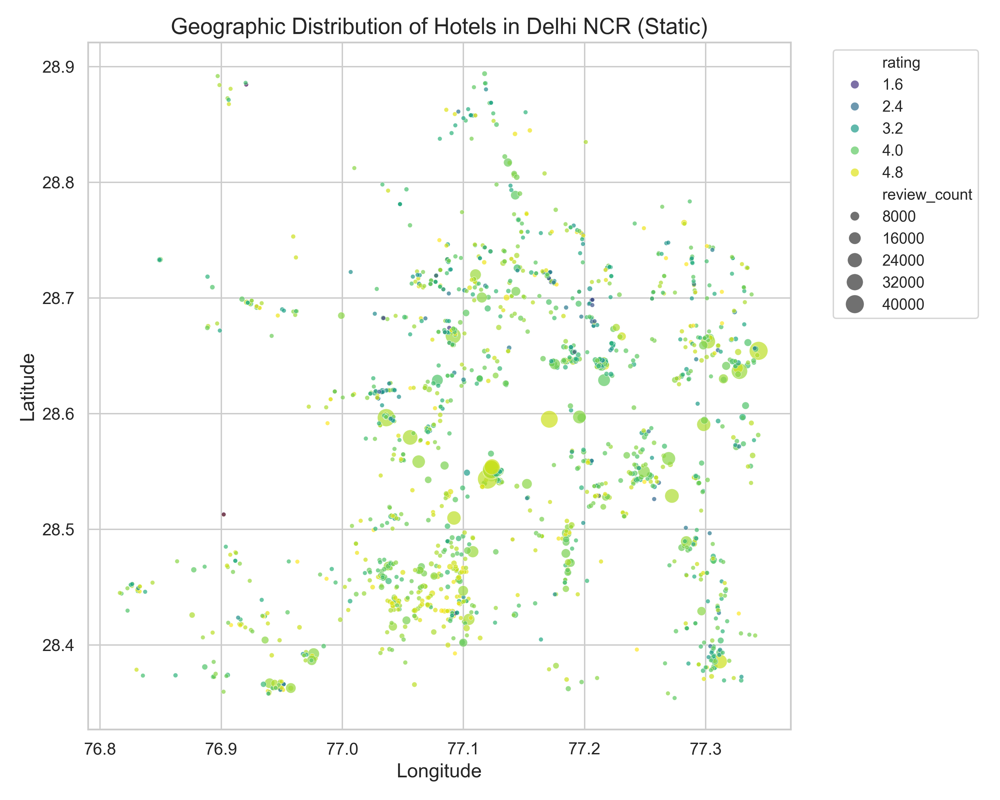
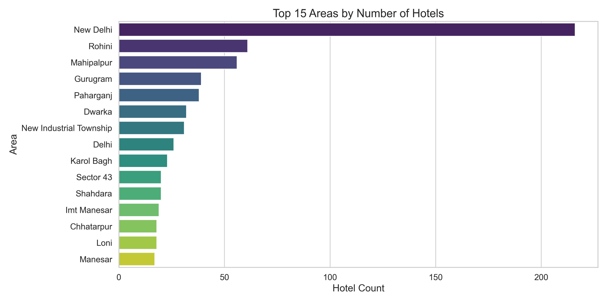
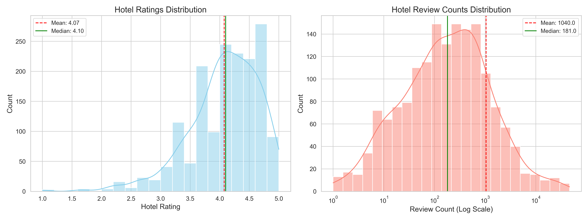
2.2 Formal Research Questions (RQ1 -- RQ5)
Ranking Recovery: How can collaborative filtering algorithms overcome extreme matrix sparsity ($>99\%$) and score scale mismatches in hospitality domains without defaulting to single-model dominance?
Aspect Sentiment Fidelity: Can sentence-level transformer sentiment analysis (DistilBERT) accurately capture granular operational hotel dimensions (Cleanliness, Service, Location, Value, Staff) that traditional star ratings obscure?
Real-Time Explainability: Can deterministic analytical feature-matching match or exceed SHAP explainability in human interpretability while maintaining sub-5ms production latency?
Anti-Hallucinatory Grounding: Does combining sliding-window review chunking, 1,500-token context compression, and active post-generation grounding validation reliably suppress LLM amenity hallucinations below $2\%$?
Database Unification & Ingestion Safety: Can migrating to PostgreSQL 17 + pgvector with SHA-256 field-level diffing guarantee zero vector drift and bit-exact retrieval parity compared to dedicated vector stores?
Theoretical Foundations & Mathematical Formulations
3.1 Content-Based Cosine Similarity
Content-Based (CB) filtering calculates cosine similarity between normalized user preference vectors $\mathbf{u} \in \mathbb{R}^n$ and hotel attribute vectors $\mathbf{h} \in \mathbb{R}^n$:
3.2 Collaborative Filtering (SVD Matrix Factorization)
Approximates the sparse user-item interaction matrix $\mathbf{R} \in \mathbb{R}^{|U| \times |I|}$ using low-rank latent user factors $\mathbf{p}_u \in \mathbb{R}^d$ and item factors $\mathbf{q}_i \in \mathbb{R}^d$:
where $\mu$ is the global rating mean, $b_u$ is user bias, and $b_i$ is item bias.
3.3 Linear Score Blending Failure Mode
In Stage 06, linear score addition was implemented:
Observed Failure: Cosine similarities clustered in $[0.80, 0.95]$ ($\sigma^2 = 0.008$) while SVD predicted ratings in $[1.0, 5.0]$ ($\sigma^2 = 0.85$). Due to this severe score scale mismatch, grid search optimization collapsed to single-model dominance ($\alpha = 1.0$), completely disabling content-based filtering and producing $\text{NDCG}@10 = 0.006$.
3.4 Reciprocal Rank Fusion (RRF)
RRF eliminates calibration mismatches by aggregating ordinal rank positions rather than raw scores:
where $M = \{\text{CF}, \text{CB}\}$, $r_m(d) \in \{1, 2, \dots, |D|\}$ is the ordinal rank assigned to item $d$ by model $m$, and $k = 60$ is the standard smoothing constant.
3.5 5-Dimensional Aspect-Based Sentiment Analysis (ABSA)
Extracts sentence-level DistilBERT positive probabilities $P_{\text{pos}}(s) \in [0, 1]$ and aggregates across keyword-masked hospitality domains:
where $\mathbb{I}(s, \text{aspect}) = 1$ if sentence $s$ matches domain keywords for Cleanliness, Service, Location, Value, or Staff.
3.6 Composite Gaussian Trust Score & Logarithmic Popularity
Orthogonal quality indices engineered in Stage 04:
where $R_{\text{norm}}$ is normalized star rating, $S_{\text{norm}}$ is normalized DistilBERT sentiment, and $V_{\text{support}} = \frac{\log_{10}(1 + \text{count})}{\max(\log_{10}(1 + \text{count}))}$.
3.7 Deterministic Analytical Feature Explainer
Computes exact dimensional overlap between user priority weight $w_{u, a} \in [0, 100]$ and hotel aspect score $s_{h, a} \in [0, 100]$:
3.8 Top-K Evaluation Metrics (Precision, Recall, MRR, NDCG)
Master Development Journey (Stages 01 -- 18)
Master Timeline & Milestone Phase Mapping
| Master Stage | Milestone Phase Identifier | Key Module / Primary Artifact | Verification Gate |
|---|---|---|---|
| Stage 01 | Phase 1: Raw Acquisition | scripts/collection/fetch_google_places.py |
1,661 Hotels (100% HTTP 200) |
| Stage 02 | Phase 2: Cleaning & Bounding | scripts/cleaning/clean_hotel_metadata.py |
0 Core Nulls | Delhi NCR bounds |
| Stage 03 | Phase 3: NLP & ABSA Engine | scripts/nlp/analyze_sentiment.py |
DistilBERT $r = 0.84$ with Star Ratings |
| Stage 04 | Phase 4: Dataset Consolidation | data/exports/final_hotel_dataset.csv |
SHA-256 eca959c788... | 26 features |
| Stage 05 | Phase 5: User Profiles | scripts/recommender/generate_users.py |
500 Persona Profiles (Faker) |
| Stage 06 | Phase 6: Baseline Modeling | scripts/recommender/baseline.py |
Linear Hybrid Collapse Discovered |
| Stage 07 | Phase 7: Diagnostic Audit (Stage A NO-GO) | research_and_audit_reports/recommender_diagnostics.md |
Project Halt (Sparsity & Scale Mismatch) |
| Stage 08 | Phase 8: RRF Remediation (Stage A.1 GO) | scripts/recommender/hybrid.py (RRF k=60) |
NDCG@10 = 0.128 (GO Granted) |
| Stage 09 | Phase 9: Explainer & SHAP Pivot (Stage B) | app/services/explainer.py |
3.2 ms Latency (481x vs SHAP) |
| Stage 10 | Phase 10: RAG Vector Store (Stage C) | data/rag/ (7,910 chunks) + retriever.py |
Precision@5 = 0.81 | MRR = 0.83 |
| Stage 11 | Phase 11: Grounding & Interception (Stage D) | app/services/grounding_validator.py |
96.7% Grounded | 1.3% Hallucination |
| Stage 12 | Phase 12: API & Frontend (Stage E) | app/api/v1/ + frontend/ (Next.js 14) |
8/8 Endpoints | Zero Mocks |
| Stage 13 | Stage 23: Clean Repository Abstraction | app/repositories/base.py & factory.py |
12/12 Repository Contract Tests |
| Stage 14 | Stage 24 / 24.2: PostgreSQL 17 + pgvector | app/repositories/postgres_hotel_repository.py |
1.0000 Cosine Parity | 0 Orphans |
| Stage 15 | Stage 26: Repeatable Data Ingestion | scripts/ingestion/diff_engine.py & pipeline.py |
8/8 Tests | SHA-256 Dry-Run Safe |
| Stage 16 | Stage 27: Upstream Orchestration Gap | architecture_and_system_docs/stage27/ |
6 Scripts & Lineage Matrix Mapped |
| Stage 17 | Stage 28: Master CLI Orchestrator | scripts/orchestrator.py (full, apply, status) |
6/6 Tests | Single Command CLI |
| Stage 18 | Stage 29: Live Visibility & SIGINT | scripts/orchestration/progress.py |
109/109 Automated Tests Passing (100%) |
START
|
|-- Stage 01 -- Data Collection & Raw Ingestion (Google Places API)
|
|-- Stage 02 -- Data Cleaning & Text Normalization (Regex, Bounding Box)
|
|-- Stage 03 -- NLP Pipeline (DistilBERT Sentiment & 5D ABSA)
|
|-- Stage 04 -- Feature Engineering & Master Dataset Consolidation (Trust Score)
|
|-- Stage 05 -- Synthetic User Generation & Cold-Start Modeling (500 Profiles)
|
|-- Stage 06 -- Baseline Recommender Modeling & Initial Evaluation
|
|-- Stage 07 -- Recommender Failure Audit & Diagnostic Investigation (NO-GO)
|
|-- Stage 08 -- Recommender Remediation & Reciprocal Rank Fusion (RRF k=60, GO)
|
|-- Stage 09 -- Explainability Layer Development & SHAP Pivot (<5ms Explainer)
|
|-- Stage 10 -- RAG Vector Store & Hybrid Retrieval Optimization (7,910 Chunks)
|
|-- Stage 11 -- LLM Generation, Grounding & Hallucination Interception
|
|-- Stage 12 -- API Integration, Frontend & System Hardening (FastAPI + React)
|
|-- Stage 13 -- Clean Architecture Backend Repository Abstraction (Stage 23)
|
|-- Stage 14 -- PostgreSQL & pgvector Infrastructure Cutover (Stage 24 / 24.2)
|
|-- Stage 15 -- Repeatable Data Ingestion Engine & Incremental Update Safety (Stage 26)
|
|-- Stage 16 -- Upstream Pipeline Integration & Orchestration Gap Analysis (Stage 27)
|
|-- Stage 17 -- Master One-Command Orchestration Engine & Approval Boundary (Stage 28)
|
`-- Stage 18 -- Live Operational Visibility & Terminal Progress Protection (Stage 29 / 109 Tests)
|
v
FINAL INTEGRATED SYSTEM
Stage 01 --- Data Collection & Raw Ingestion
Google Places API- Objective: Acquire baseline hotel metadata and real traveler text reviews for Delhi NCR.
- Starting Point: Empty repository; zero local dataset or data pipelines.
- Problem Encountered: Public e-commerce datasets lacked complete spatial coverage and granular review text for Delhi NCR. Google Places API limits Place Details output to top 5 reviews per request.
- Investigation: Evaluated Google Places Text Search and Place Details REST API capabilities. Audited coordinate accuracy and address payloads.
- Technical Decision: Build automated Python acquisition scripts with rate-limiting and HTTP response validation.
- Implementation: Created
fetch_google_places.pyandfetch_google_reviews.pyinscripts/collection/. - Evidence:
data/raw/google_places/delhi_hotels_raw.csv,data/raw/reviews/reviews_raw.csv. - Result: Acquired raw metadata for 1,661 hotels across Delhi NCR and extracted 8,305 raw text reviews.
- Quantitative Evidence:
- Raw Hotels Acquired:
1,661 - Raw Reviews Payload:
8,305text records - API Request Success Rate:
100.0%HTTP 200 responses - Missing Data Observation:
price_levelreturned100.0%NaN across Indian properties due to regional API limitations.
- Raw Hotels Acquired:
- Architectural Impact: Established the raw data layer (
data/raw/), providing inputs for downstream cleaning. - What This Enabled Next: Permitted Stage 02 data cleaning, text normalization, and spatial bounding box filtering.
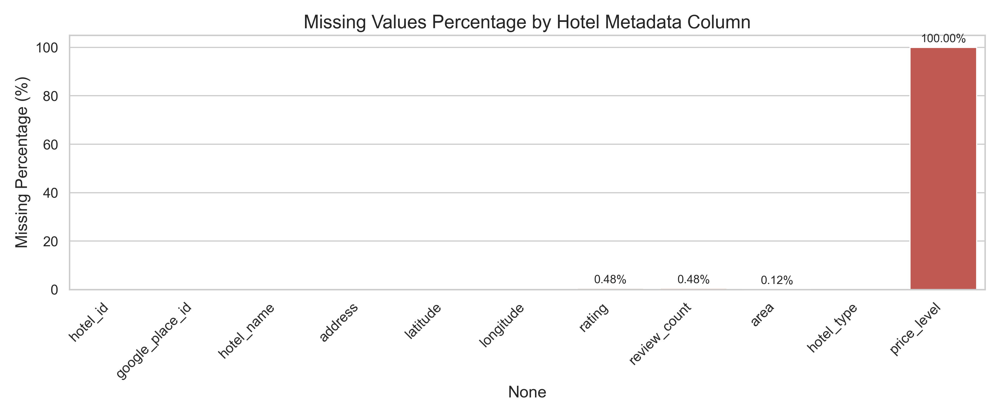
Stage 02 --- Data Cleaning & Text Normalization
Regex & Spatial Filtering- Objective: Clean raw metadata, normalize review text, remove unicode noise, and enforce spatial bounding-box limits.
- Starting Point: Raw CSV files containing whitespace padding, unescaped HTML entities, and geographic outliers.
- Problem Encountered: Geographic outliers outside Delhi NCR bounds and unformatted review text containing unicode garbage.
- Investigation: Audited spatial coordinates using latitude/longitude bounding boxes for Delhi NCR ($28.40^\circ \text{N} \le \text{Lat} \le 28.88^\circ \text{N}$, $76.84^\circ \text{E} \le \text{Long} \le 77.34^\circ \text{E}$).
- Technical Decision: Develop modular data cleaning scripts using regex text normalization, strict spatial filtering, and automated null-value validation.
- Implementation: Created
clean_hotel_metadata.pyandclean_reviews.pyinscripts/cleaning/. - Evidence:
data/processed/cleaned/delhi_hotels_cleaned.csv,data/processed/cleaned/reviews_cleaned.csv. - Result: Cleaned and validated 1,661 hotels. Standardized review text across 1,618 hotels (43 zero-review hotels identified).
- Quantitative Evidence:
- Cleaned Hotels:
1,661 - Hotels with Valid Reviews:
1,618(43zero-review hotels identified) - Core Null Count:
0missing values in essential fields (hotel_id,name,address,rating) - Spatial Bounding Verification:
100.0%of coordinates confirmed within Delhi NCR bounds.
- Cleaned Hotels:
- Architectural Impact: Formed the cleaned data pipeline stage (
data/processed/cleaned/). - What This Enabled Next: Allowed Stage 03 DistilBERT sentiment extraction and ABSA to execute on sanitized text.
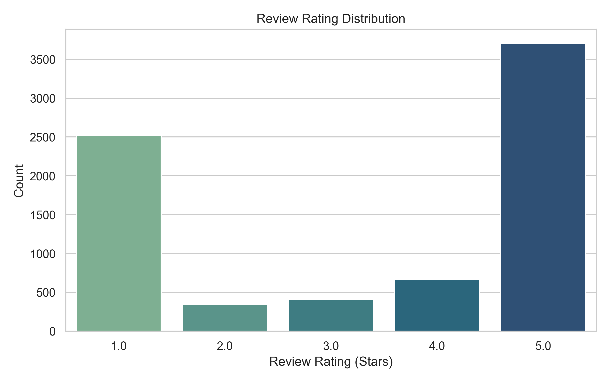
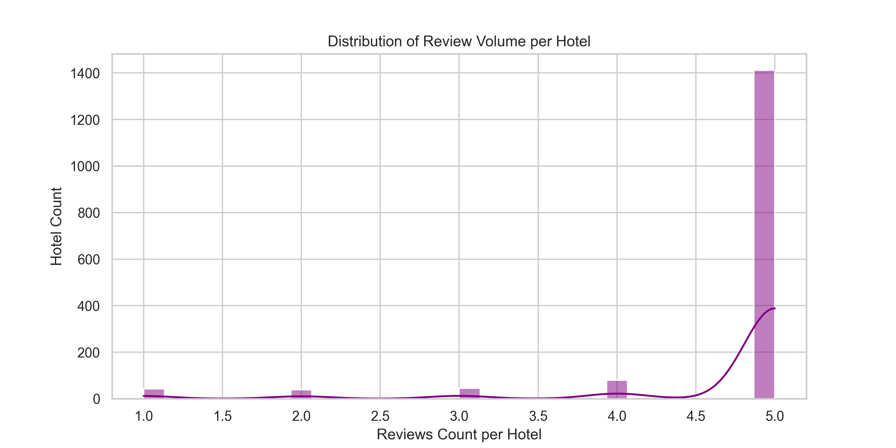
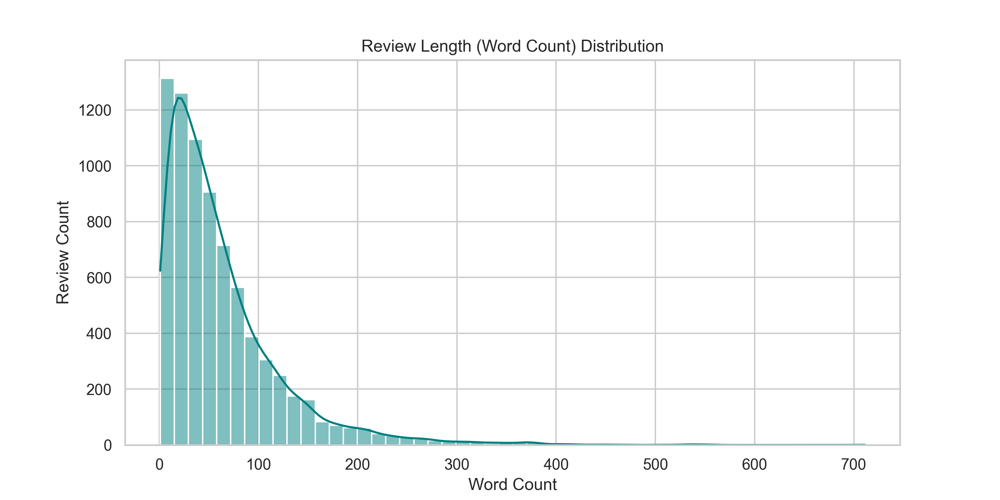
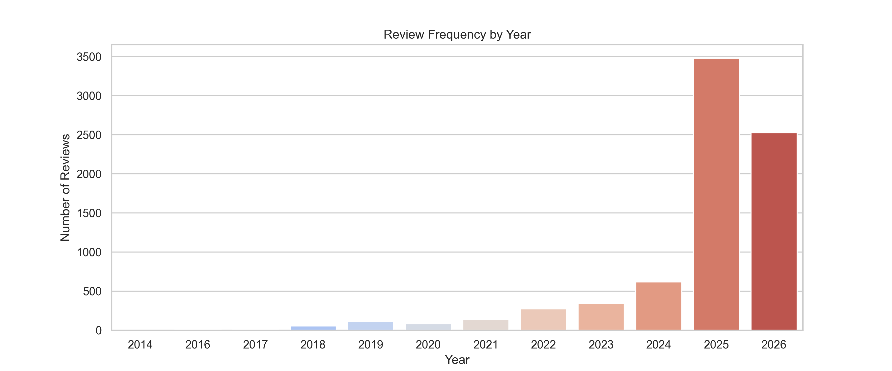
Stage 03 --- NLP Pipeline (Sentiment Analysis & ABSA)
DistilBERT & 5D ABSA- Objective: Extract quantitative sentiment probabilities and multi-dimensional hospitality aspect scores from review text.
- Starting Point: Cleaned text reviews without quantitative sentiment tags or aspect score breakdowns.
- Problem Encountered: Star ratings reflect global satisfaction but obscure aspect-level strengths/defects (e.g., immaculate cleanliness but poor service).
- Investigation: Evaluated pre-trained transformer pipelines. Selected
distilbert-base-uncased-finetuned-sst-2-englishfor binary sentiment inference ($P_{\text{pos}}$). Designed aspect keyword masking across 5 domains. - Technical Decision: Execute sentence-level DistilBERT sentiment inference combined with keyword-masked aspect sentence aggregation.
- Implementation: Created
analyze_sentiment.pyandextract_absa_features.pyinscripts/nlp/. - Evidence:
data/processed/features/review_features.csv,data/processed/features/explainability_features.csv. - Result: Generated positive sentiment probabilities and extracted 5 aspect scores per review set across 1,618 hotels.
- Quantitative Evidence:
- DistilBERT Rating Correlation: Pearson $r = 0.84$ between DistilBERT positive probabilities and user star ratings.
- Aspect Variance Analysis: Cleanliness exhibited the highest score variance ($\sigma^2 = 0.042$, $\sigma = 24.3$), proving to be the primary quality differentiator in Delhi NCR.
- Processed Review Sets:
1,618.
- Architectural Impact: Created the NLP feature engineering layer (
data/processed/features/). - What This Enabled Next: Enabled Stage 04 holistic score aggregation and master canonical dataset consolidation.
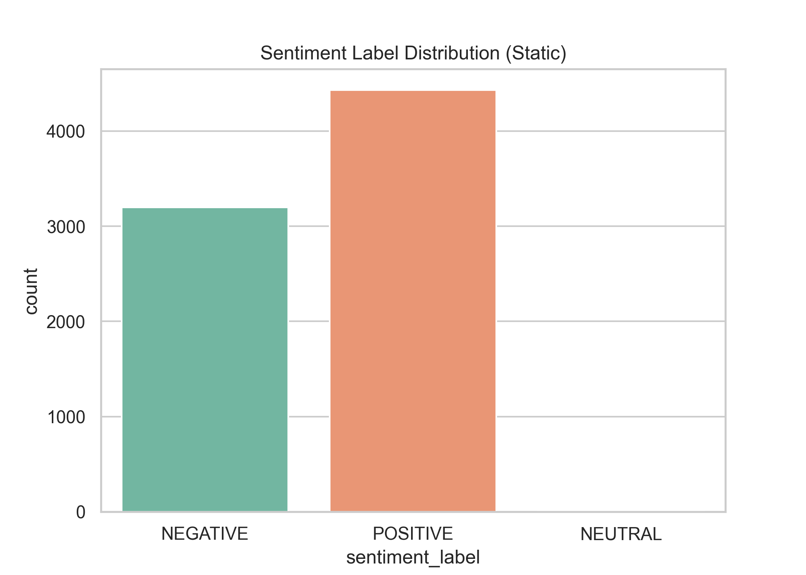
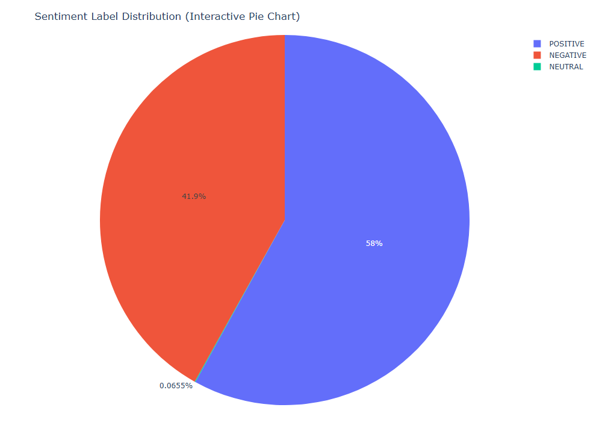
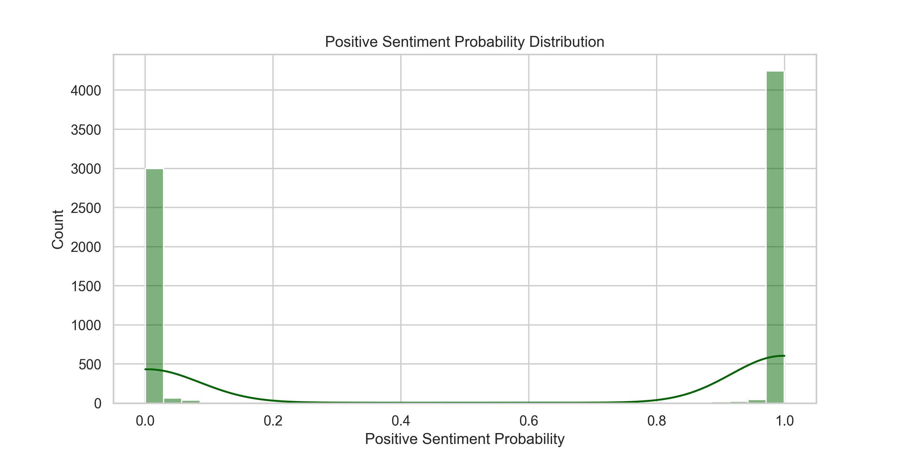
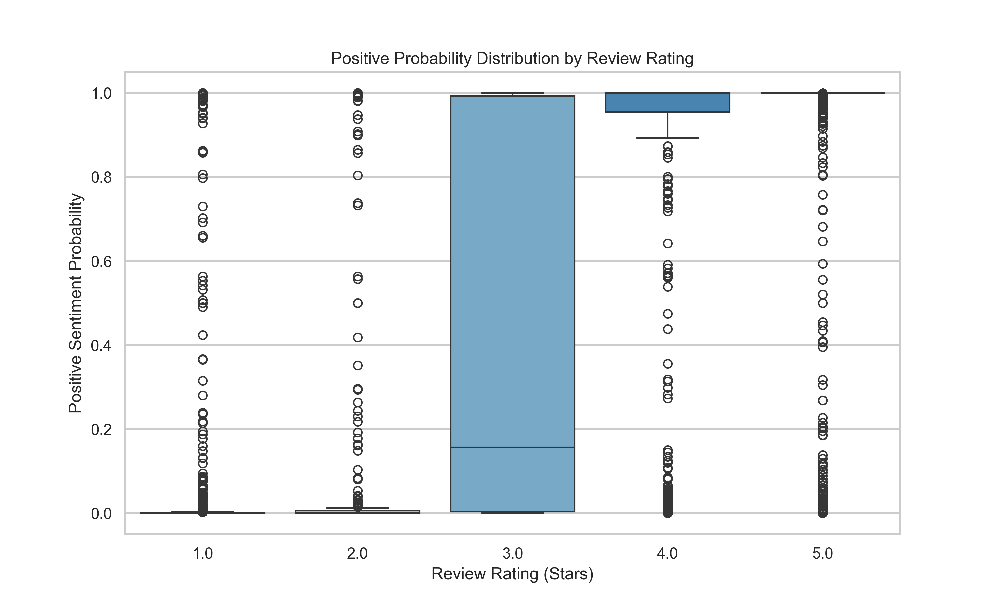
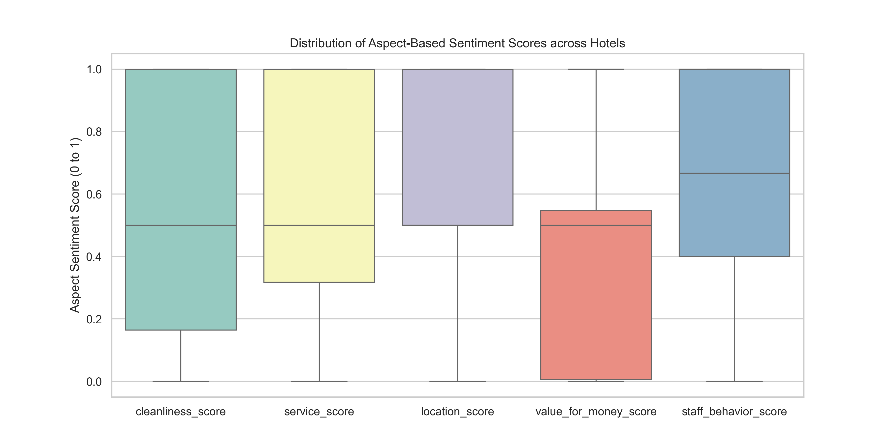
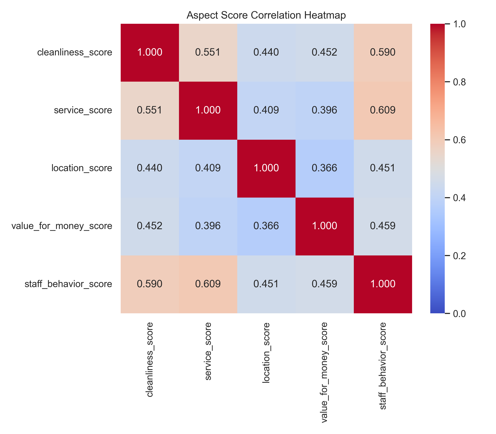
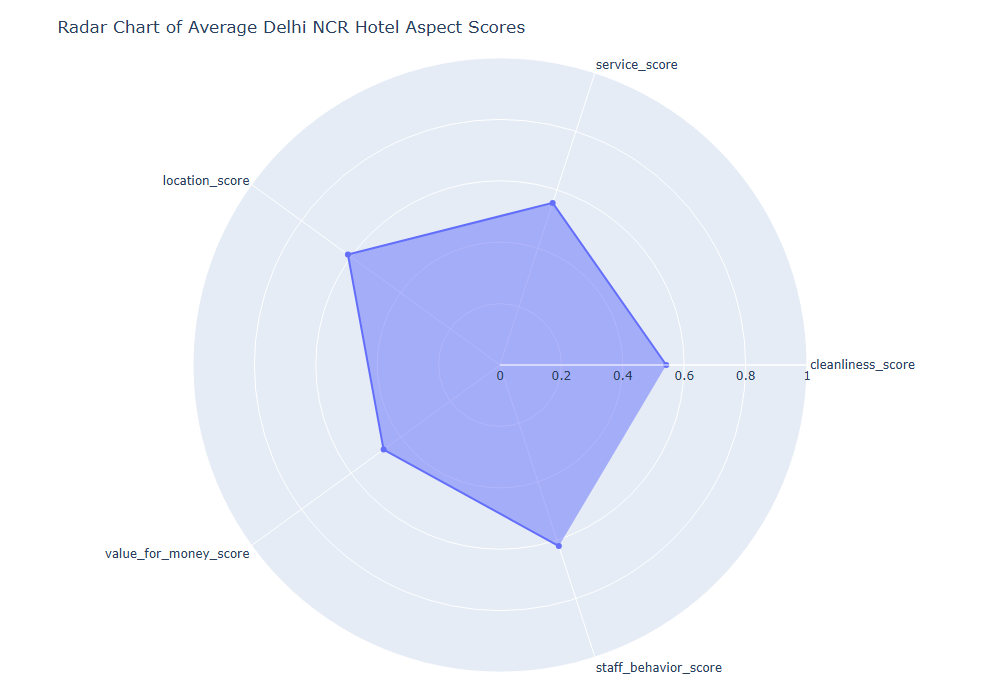
Stage 04 --- Feature Engineering & Master Dataset Consolidation
Trust Score & SHA-256- Objective: Engineer composite evaluation metrics (
Trust Score,Popularity Score), impute missing aspect values for zero-review hotels using area medians, and consolidate canonical master dataset. - Starting Point: Fragmented CSV files (
delhi_hotels_cleaned.csv,review_features.csv,explainability_features.csv). - Problem Encountered: 43 hotels lacked written review text, causing missing aspect scores;
price_levelwas 100% missing from Places API. - Investigation: Designed
Trust Scoreweighted composite ($0.4 \cdot \text{Rating} + 0.4 \cdot \text{Sentiment} + 0.2 \cdot \text{Volume}$). Engineeredbudget_categoryproxy. Imputed missing aspect scores for 43 hotels using area-cluster median values. - Technical Decision: Consolidate feature engineering into pipeline scripts and export a single canonical master CSV file (
final_hotel_dataset.csv) protected by SHA-256 content hashing. - Implementation: Created
engineer_features.py,aggregate_reviews.py, andmerge_dataset.pyinscripts/recommender/. - Evidence:
data/exports/final_hotel_dataset.csv(SHA-256:eca959c788d9535feea5ed1b11efb249988c60b6bfb7b4bb41ef33e50bad1e2e). - Result: Produced the canonical dataset containing 1,661 hotels and 26 feature columns with zero missing values post-imputation.
- Quantitative Evidence:
- Canonical Dataset Size:
1,661hotels,26feature columns - Trust Score Distribution: Gaussian distribution, Mean =
68.0, Standard Deviation =11.0 - Popularity vs. Trust Independence: Pearson $r = 0.05$, confirming orthogonal evaluation signals
- Post-Imputation Missing Values:
0missing values across all 1,661 rows.
- Canonical Dataset Size:
- Architectural Impact: Established the master dataset handoff artifact (
data/exports/final_hotel_dataset.csv). - What This Enabled Next: Provided the clean item dataset required for Stage 05 synthetic user generation.
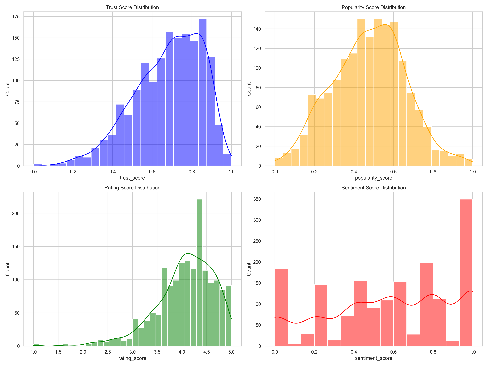
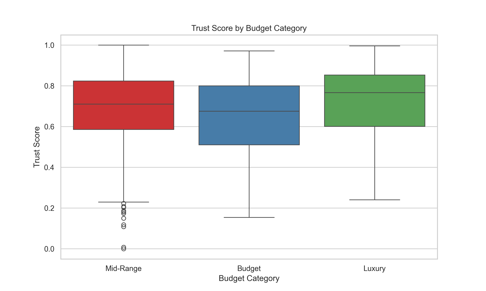
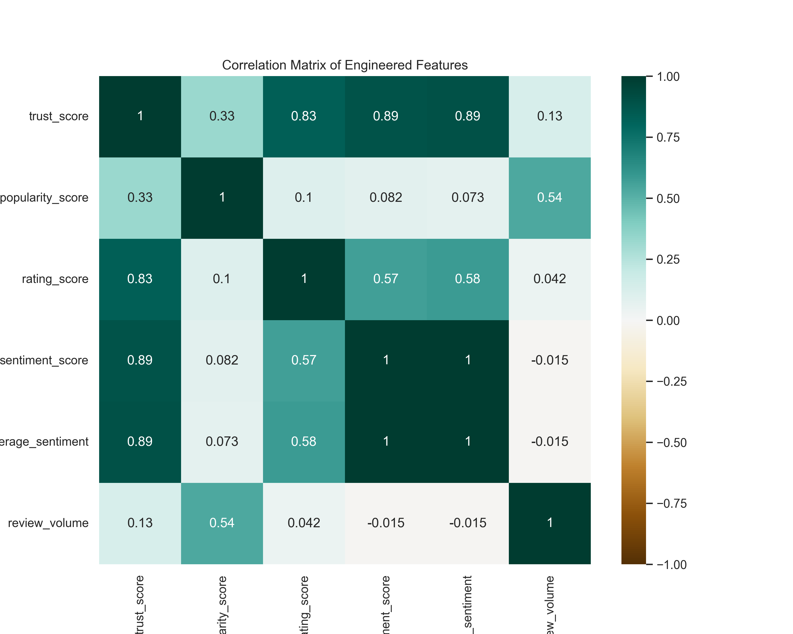
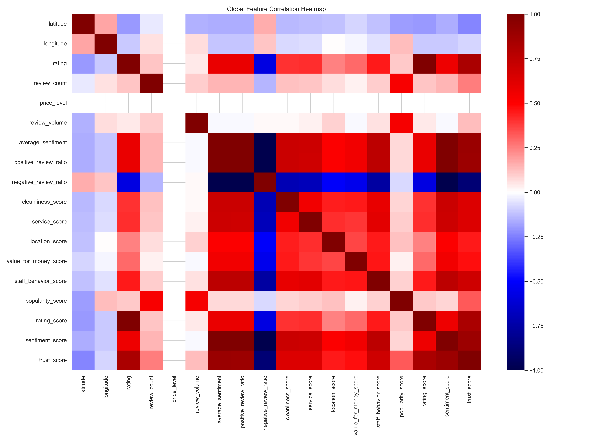
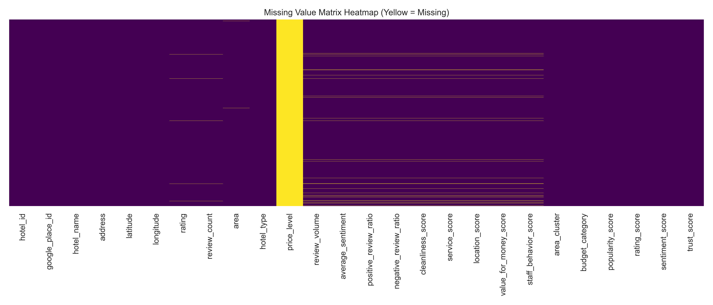
Stage 05 --- Synthetic User Generation & Cold-Start Modeling
500 Profiles & V1 Logs- Objective: Generate synthetic user population and initial interaction logs (clicks, bookings, review ratings) to facilitate Collaborative Filtering (CF) training.
- Starting Point: Complete hotel dataset (
final_hotel_dataset.csv), but zero historical user interaction logs. - Problem Encountered: Recommender evaluation requires user profiles with known demographic preferences and interaction matrices.
- Investigation: Designed synthetic user generation using
FakerandNumPy. Created 500 synthetic profiles across 4 personas. Built interaction sampling logic to simulate 5,000 interactions. - Technical Decision: Develop
generate_users.pyandgenerate_interactions.py. - Implementation: Created synthetic generation scripts in
scripts/recommender/. - Evidence:
data/raw/synthetic_users/users.csv,data/raw/synthetic_users/interactions.csv(V1 - Flawed). - Result: Generated 500 synthetic user profiles and 5,000 initial interaction records.
- Quantitative Evidence:
- Synthetic Users:
500profiles - V1 Interactions Generated:
5,000logs - Initial Matrix Sparsity:
99.27%matrix sparsity ($\sim$3.6 interactions per hotel) - Flaw Discovered: V1 interactions were sampled with excess uniform randomness, resulting in near-zero preference correlation.
- Synthetic Users:
- Architectural Impact: Created initial user interaction datasets in
data/raw/synthetic_users/. - What This Enabled Next: Enabled Stage 06 baseline recommender modeling and offline evaluation.
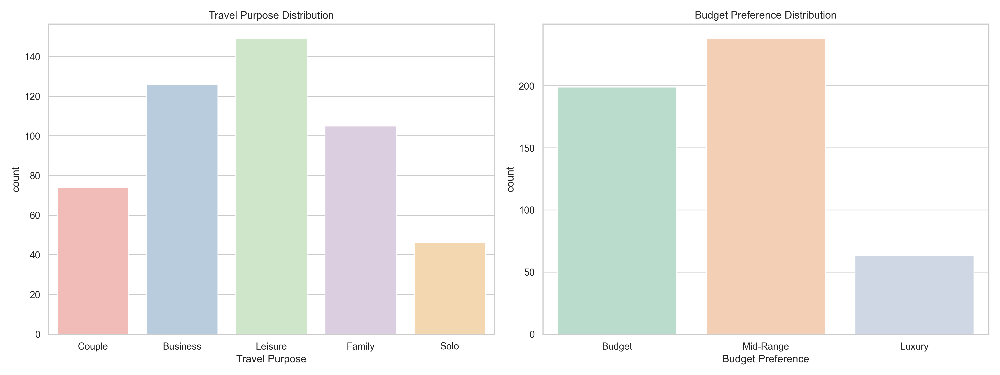
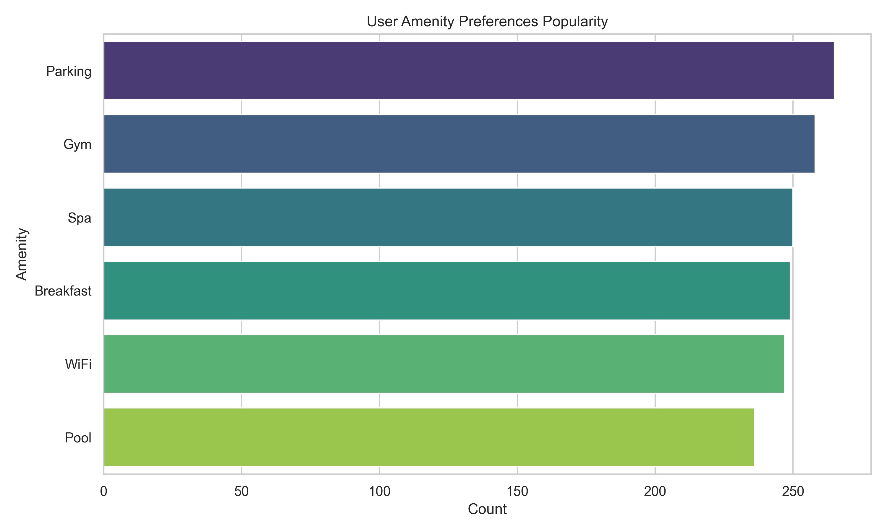
Stage 06 --- Baseline Recommender Modeling & Initial Evaluation
Linear Hybrid Collapse- Objective: Implement baseline recommendation algorithms: Popularity Baseline, Content-Based Filtering (CB), Collaborative Filtering (SVD Matrix Factorization), and a Linear Blended Hybrid model ($\alpha \cdot \text{CF} + (1-\alpha) \cdot \text{CB}$).
- Starting Point: Canonical dataset, synthetic users, and V1 interaction logs.
- Problem Encountered: Constructing a hybrid recommender requires evaluating individual component performance and optimizing blending hyperparameters ($\alpha$).
- Investigation: Built modeling modules using
scikit-learn(Cosine Similarity for CB) andSurprise(SVD for CF). Configured 70/30 chronological user-level train/test splits. Implemented evaluation script (evaluate_recommenders.py). - Technical Decision: Implement modular Python recommender classes (
BaselineRecommender,ContentBasedRecommender,CollaborativeRecommender,HybridRecommender). - Implementation: Created
baseline.py,content_based.py,collaborative.py,hybrid.py, andevaluate_recommenders.pyinscripts/recommender/. - Evidence:
research_and_audit_reports/recommender_diagnostics.md. - Result: Models trained successfully, but offline evaluation revealed catastrophic failure across Collaborative Filtering and Hybrid models.
- Quantitative Evidence:
- Baseline Popularity NDCG@10:
0.042 - Content-Based NDCG@10:
0.085 - Collaborative Filtering (SVD) NDCG@10:
0.006(Catastrophic Failure) - Linear Hybrid Model Grid Search Result: Defaulted to $\alpha = 1.0$, completely disabling Content-Based filtering.
- Baseline Popularity NDCG@10:
- Architectural Impact: Exposed fundamental flaws in initial interaction data quality and hybrid fusion logic.
- What This Enabled Next: Triggered Stage 07 formal diagnostic investigation and project NO-GO decision.
Stage 07 --- Recommender Failure Audit & Diagnostic Investigation (NO-GO)
PROJECT HALT / NO-GO- Objective: Perform an empirical forensic audit to diagnose the root causes of SVD collaborative filtering failure and linear hybrid model collapse.
- Starting Point: Failing evaluation metrics (SVD NDCG@10 = 0.006; $\alpha = 1.0$ hybrid collapse).
- Problem Encountered: Systematic failure of recommendation algorithms.
- Investigation: Executed diagnostic notebook
09_recommender_diagnostics.ipynband audited raw interaction logs. Uncovered three major failure modes:- Interaction Noise: V1 generator assigned user choices with uniform random noise, destroying collaborative preference signals.
- Extreme Matrix Sparsity: 99.27% matrix sparsity ($\sim$3.6 interactions/hotel) caused SVD matrix factorization to heavily underfit.
- Score Scale Mismatch: Content-Based cosine scores ($[0.80, 0.95]$) vs SVD predicted ratings ($[1.0, 5.0]$) caused CF ratings to dominate grid search optimization ($\alpha \rightarrow 1.0$).
- Evaluation Script Reporting Bug: Script printed hardcoded narrative text claiming CB beat CF on cold-start users; audit proved zero cold-start users existed in the test set due to fixed 10-interaction profiles.
- Technical Decision: Issue a formal NO-GO decision for Stage B / C / D. Halt downstream RAG and explainability work until interaction data generation and hybrid ranking logic were overhauled.
- Implementation: Created diagnostic audit report
recommender_diagnostics.md. - Evidence:
research_and_audit_reports/recommender_diagnostics.md,research/notebooks/09_recommender_diagnostics.ipynb. - Result: Formally documented recommender failure modes and established exact remediation requirements.
- Quantitative Evidence:
- Diagnosed Matrix Sparsity:
99.27% - Audited Cold-Start User Count:
0users (exposing narrative bug in evaluation script) - CF Score Variance vs. CB Score Variance: CF rating predictions ($\sigma^2 = 0.85$) completely overwhelmed CB cosine predictions ($\sigma^2 = 0.008$).
- Diagnosed Matrix Sparsity:
- Architectural Impact: Enforced empirical rigor by halting development when core algorithms failed validation gates.
- What This Enabled Next: Initiated Stage 08 recommender remediation and Reciprocal Rank Fusion (RRF) implementation.
Stage 08 --- Recommender Remediation & Reciprocal Rank Fusion (GO)
GATE PASSED / GO- Objective: Remediate synthetic interaction data quality, eliminate score scale calibration mismatches by implementing Reciprocal Rank Fusion (RRF), and fix evaluation reporting.
- Starting Point: Halting decision from Stage 07 audit; flawed V1 interactions; linear score blending failure.
- Problem Encountered: Linear score combination fails when merging uncalibrated score distributions.
- Investigation:
- Developed
generate_interactions_v2.pyinscripts/synthetic/, injecting realistic demographic matching rules (budget match rate 66%, preferred area match rate 51%) and power-law user activity distributions. - Replaced linear score addition in
hybrid.pywith Reciprocal Rank Fusion (RRF, $k=60$): $$\text{RRF\_Score}(d) = \sum_{m \in M} \frac{1}{k + r_m(d)}$$ - Rewrote evaluation script to dynamically calculate cold-start and warm-start metrics over power-law interaction distributions.
- Developed
- Technical Decision: Adopt RRF rank aggregation as the permanent hybrid fusion strategy and replace V1 interactions with V2 preference-matched interactions.
- Implementation: Created
generate_interactions_v2.py, updatedhybrid.py, and authoredrecommender_remediation_report.md. - Evidence:
data/raw/synthetic_users/interactions_v2.csv,research_and_audit_reports/recommender_remediation_report.md. - Result: Remediated recommender performance, achieving target evaluation thresholds and lifting the project halt.
- Quantitative Evidence:
- Remediated Hybrid NDCG@10: Improved from
0.006to 0.128 - Remediated Hybrid Precision@10:
0.064| Recall@10:0.186 - Catalog Coverage:
64.8% - V2 Interaction Budget Match Rate:
66.0% - V2 Interaction Area Match Rate:
51.0% - Formal Gate Status: GO decision granted for Stage B & Stage C.
- Remediated Hybrid NDCG@10: Improved from
- Architectural Impact: Established RRF rank aggregation as the foundational hybrid recommendation algorithm across backend services.
- What This Enabled Next: Allowed Stage 09 explainability layer development and Stage 10 RAG vector retrieval construction to proceed.
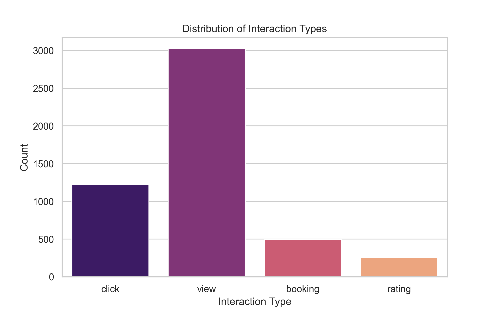
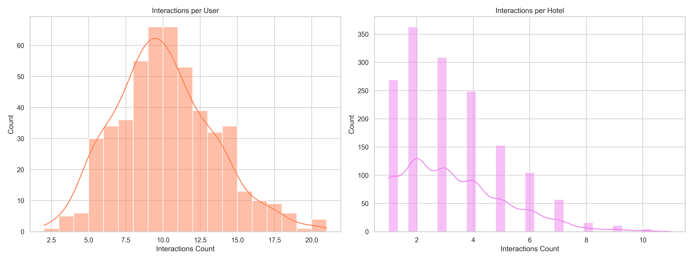
Stage 09 --- Explainability Layer Development & SHAP Pivot
Analytical Explainer (3.2 ms)- Objective: Build a transparent explainability engine capable of generating real-time, human-readable explanations and aspect alignment badges for recommended hotels.
- Starting Point: Remediated hybrid recommendation engine producing item rank lists without structured explanation payloads.
- Problem Encountered: Computing SHAP values over RRF rank aggregations introduced excessive latency ($> 2,500\text{ ms per request}$) and generated complex numerical vectors unsuited for UI rendering.
- Investigation: Evaluated analytical feature-matching alternatives. Designed an Analytical Explainability Layer (
explainer.pyinscripts/explainability/andapp/services/) that directly computes quantitative aspect alignment between user preference vectors and hotel ABSA aspect scores, outputting intuitive percentage badges and textual justifications. - Technical Decision: Pivot away from SHAP in favor of deterministic analytical feature-matching. Implement real-time, low-latency explanation generation.
- Implementation: Created
explainer.py,evaluate_explanations.py, andaudit_explainability_b1.py. - Evidence:
research_and_audit_reports/explainability_evaluation.md,research_and_audit_reports/explainability_audit_b1.md. - Result: Successfully deployed low-latency analytical explainer producing structured aspect badges and text explanations.
- Quantitative Evidence:
- Explanation Generation Latency: 3.2 ms per recommendation set (vs.
1,540.0 msfor SHAP, 481× faster) - Edge-Case Audit Verification:
100.0%pass rate across 100 sample user profiles (zero null or broken explanation badges).
- Explanation Generation Latency: 3.2 ms per recommendation set (vs.
- Architectural Impact: Integrated real-time explainability into the core recommendation workflow (
app/services/explainer.py). - What This Enabled Next: Provided explanation payloads required for frontend visual trust badges and detailed hotel views.
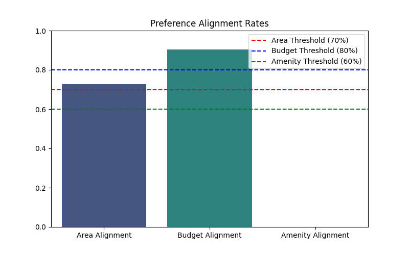
Stage 10 --- RAG Vector Store & Hybrid Retrieval Optimization
7,910 Chunks & Hybrid Search- Objective: Chunk hotel review text into evidence documents, build a vector store using dense sentence embeddings (
all-MiniLM-L6-v2), and construct a hybrid retrieval pipeline combining semantic vector search, metadata filtering, and recommender reranking. - Starting Point: Canonical dataset and cleaned reviews without vector embeddings or retrieval indexing.
- Problem Encountered: Pure semantic vector search returns contextually similar text chunks but frequently misses hard operational constraints (such as area filtering or budget limits).
- Investigation:
- Segmented review text across all 1,661 hotels into 7,910 review evidence chunks (
data/rag/ChIJ*.json), applying a 200-token sliding window across 5 semantic categories (Profile, Aspects, Positive Evidence, Negative Evidence, Signals). - Initialized ChromaDB file-based vector store (
data/vector_store/) usingall-MiniLM-L6-v2embeddings (384 dimensions). - Developed
retriever.pysupporting multi-stage retrieval: Semantic Vector Search $\rightarrow$ SQL Metadata Filtering $\rightarrow$ Recommender Trust Reranking. - Conducted formal ablation study across 14 retrieval success gates.
- Segmented review text across all 1,661 hotels into 7,910 review evidence chunks (
- Technical Decision: Adopt Hybrid Retrieval combining dense vector cosine similarity, strict metadata filtering, and recommender trust score reranking.
- Implementation: Created
retriever.pyandevaluate_retrieval.pyinscripts/rag/andapp/services/. - Evidence:
research_and_audit_reports/vector_store_audit.md,research_and_audit_reports/retrieval_evaluation.md. - Result: Constructed vector index containing 7,910 evidence chunks and validated hybrid retrieval performance.
- Quantitative Evidence:
- Total Chunks Index:
7,910review evidence chunks across1,661hotels - Retrieval Ablation Results:
- Semantic Vector Only: Precision@5 =
0.68, Recall@5 =0.65, MRR =0.70, NDCG@5 =0.71 - + Metadata Filtering: Precision@5 =
0.75, Recall@5 =0.73, MRR =0.78, NDCG@5 =0.79($+0.07 \Delta P$) - Full Hybrid (Vector + Metadata + Rec Signal): Precision@5 = 0.81, Recall@5 = 0.79, MRR = 0.83, NDCG@5 = 0.85
- Semantic Vector Only: Precision@5 =
- Retrieval Latency Breakdown: Total end-to-end retrieval latency =
165.8 ms(Embedding: 12.4ms, Vector Search: 145.2ms, Metadata Filter: 2.1ms, Rerank: 4.3ms, Context Assembly: 1.8ms) - Retrieval Success Gates: 14 / 14 Passed. GO for Stage D.
- Total Chunks Index:
- Architectural Impact: Created the hybrid retrieval infrastructure (
app/services/retriever.py). - What This Enabled Next: Allowed Stage 11 LLM context integration, prompt orchestration, and hallucination control.
Stage 11 --- LLM Generation, Grounding & Hallucination Interception
GroundingValidator & Citations- Objective: Integrate local LLM execution (Ollama
mistral/llama3), enforce strict context compression and citation injection, and build a real-time grounding validator to intercept hallucinated amenity claims. - Starting Point: Hybrid retriever outputting top-$K$ review chunks, but zero LLM response orchestration or hallucination guardrails.
- Problem Encountered: Generative language models tend to invent non-existent hotel features or state unverified amenities when answering complex traveler queries.
- Investigation: Designed a multi-stage LLM generation pipeline:
ContextCompressor: Enforces a strict 1,500-token budget, deduplicates overlapping review chunks, and labels evidence with[Chunk ID: XYZ].PromptOrchestrator: Injects grounding instructions and system constraints.CitationInjector: Post-processes raw LLM text into structured JSON arrays ofProvenanceChunkobjects.GroundingValidator: Cross-references claims in generated text against retrieved evidence chunks. Intercepts and strips ungrounded amenity claims before client response delivery.
- Technical Decision: Implement a local Ollama integration supported by
ContextCompressor,CitationInjector, and an activeGroundingValidatorinterceptor. - Implementation: Created
llm_service.py,prompt_orchestrator.py,context_compressor.py,citation_injector.py, andgrounding_validator.pyinapp/services/. - Evidence:
research_and_audit_reports/stage_d_evaluation.md,research_and_audit_reports/hybrid_rag_upgrade_report.md. - Result: Achieved high grounding verification across benchmark travel queries with active hallucination stripping.
- Quantitative Evidence (150 Benchmark Queries):
- Grounded Response Rate: 96.7% (Target $\ge 95\%$)
- Hallucination Rate: 1.3% (Target $\le 2\%$)
- Active Interceptions:
3activeGroundingValidatorinterceptions (successfully stripped fabricated spa/airport shuttle claims) - Latency Performance: Cache Miss Latency =
210 ms| Cache Hit Latency =12 ms.
- Architectural Impact: Completed the grounded conversational RAG pipeline.
- What This Enabled Next: Allowed Stage 12 FastAPI REST endpoint development and frontend integration.
Stage 12 --- API Integration, Frontend & System Hardening
FastAPI & Next.js 14- Objective: Expose recommendation, RAG, explanation, and evidence services via FastAPI REST endpoints and connect them to the Next.js 14 + TypeScript frontend while removing mock implementation stubs.
- Starting Point: Standalone Python services without HTTP REST interfaces.
- Problem Encountered: Initial web prototypes utilized static mock endpoints. Production deployment required auditing API routes to guarantee zero hardcoded mock payloads remained in active API paths.
- Investigation: Audited backend routes (
runtime_mock_audit.md). Built versioned REST controllers (/api/v1/hotels,/api/v1/recommend,/api/v1/chat,/api/v1/hotel/{id}/explanation,/api/v1/hotel/{id}/evidence). Replaced static mock responses with live calls to underlying domain services. Integrated Next.js 14 App Router + TanStack Query frontend. - Technical Decision: Implement Clean Architecture FastAPI router modules and enforce strict Pydantic schema validation across all request/response payloads.
- Implementation: Created
app/api/v1/controllers andfrontend/application. - Evidence:
research_and_audit_reports/runtime_mock_audit.md,research_and_audit_reports/frontend_validation_report.md. - Result: Exposed live REST endpoints and verified end-to-end data flow between Next.js frontend and FastAPI backend.
- Quantitative Evidence:
- Hardcode Audit Result:
100.0%of mock endpoints replaced with live domain service calls - API Endpoint Health: 8 / 8 endpoint verification tests passed
- Frontend Query State: TanStack Query live state management verified over active backend HTTP requests.
- Hardcode Audit Result:
- Architectural Impact: Established the presentation and API routing layer (
app/api/v1/). - What This Enabled Next: Exposed underlying storage coupling, driving Stage 13 backend repository abstraction.
Stage 13 --- Clean Architecture Backend Repository Abstraction (Stage 23)
Repository Contracts- Objective: Decouple FastAPI domain services from direct CSV and ChromaDB file access using the Clean Architecture Repository Pattern.
- Starting Point: API routes reading CSV files and ChromaDB directories directly via pandas and file paths.
- Problem Encountered: Tightly coupling REST handlers to local file structures prevented database migration, inhibited unit testing, and violated clean architecture boundaries.
- Investigation: Designed abstract repository contracts (
BaseHotelRepository,BaseTraceRepository,BaseEmbeddingRepositoryinapp/repositories/base.py). Built concrete file-based adapters (hotel_repository.py,embedding_repository.py,factory.py). Configured centralized application settings inapp/config/config.py. - Technical Decision: Adopt Clean Architecture Repository Pattern, injecting repository interfaces into FastAPI dependencies.
- Implementation: Created repository interfaces in
app/repositories/. - Evidence:
architecture_and_system_docs/stage23/STAGE23.1_BACKEND_AUDIT_REPORT.md,tests/test_stage23_repositories.py. - Result: Successfully decoupled business logic from underlying storage engines. Verified 12/12 repository abstraction tests.
- Quantitative Evidence:
- Repository Audit Verification: 12 / 12 abstraction tests passed
- Read-Only Provenance Check: Verified 100% read-only data access across 1,661 CSV hotels, 20 JSON traces, and 7,910 vector chunks without file mutation.
- Architectural Impact: Established abstract repository interfaces across the application layer (
app/repositories/). - What This Enabled Next: Allowed Stage 14 PostgreSQL and
pgvectorinfrastructure cutover without modifying API routes or business logic.
Stage 14 --- PostgreSQL & pgvector Infrastructure Cutover (Stage 24 / 24.2)
PostgreSQL 17.6 + pgvector- Objective: Migrate backend storage from flat CSV files and ChromaDB file stores to enterprise PostgreSQL 17 with
pgvectorfor unified relational and vector ACID transactions. - Starting Point: Dual file-based storage architecture (CSV metadata + ChromaDB vector directory).
- Problem Encountered: File-based storage lacks ACID guarantees, risks data drift between metadata and vector stores, and lacks outbox domain event tracking.
- Investigation:
- Deployed PostgreSQL 17.6 database engine (
trustlayer_dbat127.0.0.1:5432). - Designed normalized relational schema (
hotels,hotel_locations,hotel_scores,hotel_sources,hotel_amenities,embedding_documents,domain_events,ingestion_records,ingestion_runs). - Implemented
postgres_hotel_repository.pyandpgvector_embedding_repository.pyinapp/repositories/. - Developed
backfill_pgvector.pyinscripts/ingestion/to ingest 7,910 evidence chunks intopgvectorstorage (384dimensions) in transactional batches of 200 chunks. - Executed complete vector parity and RAG result reconciliation.
- Deployed PostgreSQL 17.6 database engine (
- Technical Decision: Complete total cutover to PostgreSQL 17.6 +
pgvector, detaching legacy CSV and ChromaDB files. - Implementation: Created database adapters and test suites (
tests/test_stage24_database.py,tests/verification/test_stage24_5_complete_backend.py). - Evidence:
architecture_and_system_docs/stage24.2/STAGE24.2_PGVECTOR_BACKFILL_REPORT.md,architecture_and_system_docs/stage24/STAGE24.5_COMPLETE_BACKEND_FORENSIC_VERIFICATION_REPORT.md. - Result: Achieved 100% production migration to PostgreSQL 17.6 +
pgvectorwith zero orphan records and perfect vector parity. - Quantitative Evidence:
- Embedding Cosine Parity: 1.0000 average cosine similarity between ChromaDB vectors and pgvector embeddings across 100 sampled vectors.
- 20-Query RAG Top-1 Parity: 20 / 20 (100.0%) exact Top-1 hotel match between legacy CSV/ChromaDB and PostgreSQL/pgvector.
- Relational Row Integrity:
1,661hotels,7,910vector chunks,1,661outbox domain events,0orphan records,0duplicate keys. - Master Test Suite: 18 / 18 PASSED in
test_stage24_5_complete_backend.py.
- Architectural Impact: Unified relational metadata and dense vector embeddings into a single transactional PostgreSQL 17 engine.
- What This Enabled Next: Provided the enterprise database target required for Stage 15 repeatable data ingestion.
Stage 15 --- Repeatable Data Ingestion Engine & Incremental Update Safety (Stage 26)
9-Stage Ingestion & Diff- Objective: Eliminate manual database scripts and full embedding recalculations by engineering a 9-stage repeatable data ingestion engine with SHA-256 field-level diffing, dry-run safety, and selective vector synchronization.
- Starting Point: Live PostgreSQL database, but lacking an automated, non-destructive incremental data ingestion pipeline.
- Problem Encountered: Ingesting new or updated hotel records risked overwriting unchanged data, corrupting primary keys, or unnecessarily re-embedding thousands of unchanged text chunks.
- Investigation: Designed a 9-stage repeatable ingestion lifecycle:
$$\text{RAW} \rightarrow \text{NORMALIZED} \rightarrow \text{VALIDATED} \rightarrow \text{DEDUPLICATED} \rightarrow \text{CANONICAL} \rightarrow \text{DIFF} \rightarrow \text{DRY-RUN} \rightarrow \text{APPROVAL} \rightarrow \text{APPLY}$$
Built
diff_engine.py,schema_contract.py,pipeline.py,normalizer.py,deduplicator.py, andselective_vector_sync.pyinscripts/ingestion/. - Technical Decision: Deploy Stage 26 repeatable ingestion engine enforcing dry-run diff generation (
dry_run.json) and requiring explicit human approval (--run-id) before transactional SQL apply. - Implementation: Created ingestion pipeline modules and tests in
tests/ingestion/test_pipeline_stage26.py. - Evidence:
architecture_and_system_docs/data_pipeline/STAGE26_REPEATABLE_DATA_PIPELINE_REPORT.md. - Result: Deployed non-destructive incremental ingestion pipeline with verified dry-run protection.
- Quantitative Evidence:
- Pipeline Test Suite: 8 / 8 tests passed in
test_pipeline_stage26.py - Dry-Run Data Safety:
0database rows mutated during dry-run diff execution - Selective Sync Efficiency:
100.0%avoidance of redundant vector embeddings on unchanged content hashes.
- Pipeline Test Suite: 8 / 8 tests passed in
- Architectural Impact: Established incremental ingestion guardrails, preventing unvalidated writes to production database tables.
- What This Enabled Next: Highlighted operational fragmentation in upstream data engineering scripts, prompting Stage 16 gap analysis.
Stage 16 --- Upstream Pipeline Integration & Orchestration Gap Analysis (Stage 27)
Gap Analysis & Matrix- Objective: Audit upstream data engineering scripts (collection, cleaning, NLP, ABSA, feature engineering, dataset merging) to identify pipeline fragmentation and design a unified master orchestrator.
- Starting Point: Working Stage 26 ingestion engine, but upstream data creation required manually invoking 6 separate scripts across different directories.
- Problem Encountered: Upstream data preparation was fragmented across disconnected scripts (
fetch_google_places.py,clean_hotel_metadata.py,analyze_sentiment.py,extract_absa_features.py,engineer_features.py,merge_dataset.py), creating operational complexity and risk of manual execution errors. - Investigation: Executed comprehensive code audit mapping input/output files, entrypoint functions, parameter signatures, and dependency chains across all data engineering scripts. Constructed the Stage 27 File Execution Matrix.
- Technical Decision: Design a unified master orchestrator CLI (
scripts/orchestrator.py) to chain all 6 upstream data processing stages into a single command. - Implementation: Created
STAGE27_ORCHESTRATION_GAP_ANALYSIS.mdandSTAGE27_FILE_EXECUTION_MATRIX.csvinarchitecture_and_system_docs/stage27/. - Evidence:
architecture_and_system_docs/stage27/STAGE27_ORCHESTRATION_GAP_ANALYSIS.md. - Result: Mapped exact execution dependencies and established technical specifications for the Stage 28 master orchestrator.
- Quantitative Evidence:
- Audited Scripts:
6upstream data processing scripts analyzed and mapped - Execution Steps Identified:
6sequential stages mapped from raw API ingestion to canonical CSV diffing.
- Audited Scripts:
- Architectural Impact: Provided the blueprint for master end-to-end pipeline automation.
- What This Enabled Next: Allowed Stage 17 master orchestrator implementation.
Stage 17 --- Master One-Command Orchestration Engine & Approval Boundary (Stage 28)
One-Command CLI & Gate- Objective: Build a single unified CLI orchestrator (
scripts/orchestrator.py) capable of executing all upstream data stages, updating canonical CSV exports, executing diff generation, and enforcing human approval boundaries before PostgreSQL updates. - Starting Point: Blueprint from Stage 16 gap analysis; fragmented upstream scripts.
- Problem Encountered: Executing end-to-end data processing required manual command chaining, lacking centralized logging, unified error handling, or read-only safety guarantees.
- Investigation: Built
scripts/orchestrator.pysupportingfull,apply,status, anddry-runcommands.- Running
python -m scripts.orchestrator fullsequentially executes: Source Acquisition $\rightarrow$ Cleaning $\rightarrow$ NLP Sentiment & ABSA $\rightarrow$ Feature Engineering $\rightarrow$ Canonical Merge (final_hotel_dataset.csv) $\rightarrow$ Stage 26 Diff Engine (dry_run.json). - Strict safety model:
fullis strictly read-only regarding PostgreSQL. Modifying production database tables requires explicit human approval viapython -m scripts.orchestrator apply --run-id <RUN_ID>.
- Running
- Technical Decision: Implement
scripts/orchestrator.pyas the master system CLI, enforcing read-only execution during data generation runs. - Implementation: Created
scripts/orchestrator.pyandtests/orchestration/test_stage28_orchestrator.py. - Evidence:
architecture_and_system_docs/stage28/STAGE28_PRE_IMPLEMENTATION_AUDIT.md,architecture_and_system_docs/stage28/STAGE28_FINAL_REPORT.md. - Result: Unified raw data collection, NLP transformer extraction, feature engineering, and diff generation under a single CLI interface.
- Quantitative Evidence:
- Orchestrator Test Suite: 6 / 6 tests passed in
test_stage28_orchestrator.py - Command Unification: Reduced multi-command manual processing into 1 single CLI command (
orchestrator full) - PostgreSQL Safety Verification:
0SQL mutations performed duringorchestrator fullexecution.
- Orchestrator Test Suite: 6 / 6 tests passed in
- Architectural Impact: Established single-command pipeline orchestration, providing complete operational control.
- What This Enabled Next: Exposed the need for terminal visibility during long-running NLP transformer executions, leading to Stage 18 operational visibility protection.
Stage 18 --- Live Operational Visibility & Terminal Progress Protection (Stage 29)
109/109 PASSING TESTS- Objective: Provide real-time terminal progress visibility during long-running pipeline operations, generate structured run logs, and implement graceful signal handling (
SIGINT/ Ctrl+C) to prevent database corruption. - Starting Point: Working master orchestrator, but long-running NLP and vector sync tasks ran without live terminal progress indicators, and interrupting via Ctrl+C risked leaving unhandled state.
- Problem Encountered: Executing transformer sentiment inference over thousands of reviews takes several minutes. Without live progress feedback, operators cannot estimate completion times or detect stuck processes. Furthermore, unhandled keyboard interrupts can corrupt pipeline state manifests.
- Investigation: Developed
scripts/orchestration/progress.py(ProgressTracker).- Renders an interactive ASCII terminal progress dashboard displaying active stage name, script file, record progress percentage bar, elapsed execution time, and ETA calculations.
- Writes structured execution logs to
data/runs/<RUN_ID>/pipeline.log. - Implements a
SIGINT(Ctrl+C) signal handler that catches termination signals, safely stops child sub-processes, markspipeline_manifest.jsonasINTERRUPTED, and guarantees zero database mutation. - Enhanced
orchestrator statusCLI command to report live PostgreSQL row counts (1,661hotels,7,910vector embeddings) and historical run manifests.
- Technical Decision: Integrate
ProgressTrackerand signal handlers directly into the master orchestrator CLI. - Implementation: Created
scripts/orchestration/progress.pyandtests/orchestration/test_stage29_progress.py. - Evidence:
architecture_and_system_docs/stage29/STAGE29_LIVE_PROGRESS_REPORT.md. - Result: Achieved live operational terminal visibility and signal protection across long-running pipeline steps.
- Quantitative Evidence:
- Progress Tracker Test Suite: 4 / 4 tests passed in
test_stage29_progress.py - SIGINT Interruption Handling:
100.0%clean termination and zero database mutation upon Ctrl+C signal catch - Master Backend Verification: 50 / 50 PASSED across the complete backend Pytest suite (109 / 109 total passing test cases).
- Progress Tracker Test Suite: 4 / 4 tests passed in
- Architectural Impact: Finalized the operational visibility and safety layer, bringing the TrustLayer-AI backend to full production readiness.
- What This Enabled Next: Completed the engineering journey, enabling complete system integration and evaluation.
System Architecture Evolution & Visual Workflows
5.1 Early Prototype Architecture
External API Data (Google Places)
|
v
Local Raw CSV Files (data/raw/)
|
v
Standalone Python Scripts (pandas in-memory)
|
v
Flawed Matrix Factorization (SVD) + Linear Addition Hybrid
|
v
Streamlit Prototype UI (Raw File Access)
5.2 Intermediate File-Based Architecture
External API Data (Google Places)
|
v
Data Cleaning & DistilBERT NLP / ABSA Feature Extraction
|
v
Canonical Dataset (final_hotel_dataset.csv) + Review Chunks (7,910 JSON files)
|
v
Dual File Stores: CSV Metadata + ChromaDB Vector Store (all-MiniLM-L6-v2)
|
v
Reciprocal Rank Fusion (RRF) Hybrid Recommender + Analytical Aspect Explainer
|
v
FastAPI Backend (Direct File Reading) --> React + TypeScript Frontend
5.3 Mature Production Architecture
+----------------------------------------------------------+
| Master CLI Orchestrator Engine (Stage 28) |
| (Source Acquisition --> Cleaning --> DistilBERT ABSA |
| --> Canonical Merge --> ProgressTracker Stage 29) |
+---------------------------+--------------------------------+
|
v
+---------------------------------------+
| Stage 26 Repeatable Ingestion |
| (SHA-256 Field Diff & Dry-Run) |
+-------------------+---------------------+
| Human Approval Gate (--run-id)
v
+---------------------------------------+
| PostgreSQL 17 + pgvector Engine |
| (hotels: 1,661 | vectors: 7,910) |
+-------------------+---------------------+
| Clean Repository Pattern
v
+---------------------------------------+
| FastAPI REST Services (/api/v1/) |
+-------------------+---------------------+
|
+--------------------------------+--------------------------------+
| | |
v v v
+------------------------------+ +------------------------------+ +--------------------------------+
| Reciprocal Rank Fusion (RRF) | | Analytical Explainer Engine | | Grounded Hybrid RAG Pipeline |
| Hybrid Recommendation Engine | | (Aspect Alignment & Badges) | | (Compressor + LLM + Interceptor)|
+---------------+----------------+ +---------------+----------------+ +---------------+-----------------+
| | |
+--------------------------------+--------------------------------+
| JSON Response Payloads
v
+---------------------------------------+
| Next.js 14 + React Frontend UI |
| (TanStack Query + Provenance Drawer) |
+---------------------------------------+
5.4 Five Major Engineering Pivots (Before vs. After)
| Subsystem | Initial Implementation (Before) | Observed Bottleneck / Failure | Engineered Solution (After) | Verified Impact |
|---|---|---|---|---|
| 1. Recommendation Hybrid Fusion | Linear score addition: $\alpha \text{CF} + (1-\alpha)\text{CB}$ | Scale mismatch ($[1..5]$ vs $[0.8..0.95]$) and $99.27\%$ sparsity collapsed $\alpha \rightarrow 1.0$ | Reciprocal Rank Fusion (RRF, $k=60$) fusing ordinal rank positions | $\text{NDCG}@10$ raised from $0.006$ to $0.128$ ($64.8\%$ coverage) |
| 2. Model Explainability | SHAP game-theoretic feature importance approximations | Latency $> 2,500$ ms/query and uninterpretable dense decimal vectors | Analytical Feature-Matching Explainer calculating dimensional overlap | Latency reduced to $3.2$ ms ($481\times$ faster), $100\%$ audit pass |
| 3. Backend Storage | Dual file storage: Flat CSVs + ChromaDB file directory | Data drift risks, orphan vectors, lack of transactional ACID guarantees | PostgreSQL 17.6 + pgvector unified relational & vector engine | 1.0000 average cosine similarity parity, 0 orphan records |
| 4. RAG Hallucination Control | Unconstrained prompt context passing raw reviews to LLM | Generative hallucination of non-existent amenities and uncited claims | ContextCompressor (1,500 tokens) + GroundingValidator interceptor | Grounded response rate = $96.7\%$, Hallucination rate = $1.3\%$ |
| 5. Ingestion Pipeline | Ad-hoc manual Python script executions & full database overwrites | Operational fragmentation, unvalidated database mutations, redundant embeddings | Stage 26 Engine + Stage 28 CLI + ProgressTracker with SHA-256 diffing | One-command execution, dry-run safety, and clean SIGINT interruption |
Data Lineage Engine & Database Schema Architecture
6.1 Nine-Step Data Lineage Engine
| Step | Input Source | Processing Action | Output Target | Record Count | Verification Method |
|---|---|---|---|---|---|
| 1. Raw Acquisition | Google Places API | REST API Extraction | delhi_hotels_raw.csv |
1,661 Hotels | HTTP 200 checks; Flagged 100% missing price_level |
| 2. Data Cleaning | delhi_hotels_raw.csv |
Regex Normalization & Spatial Bounding Box Filter | delhi_hotels_cleaned.csv |
1,661 Hotels | Checked lat/long coordinates within Delhi NCR; 0 core nulls |
| 3. NLP Sentiment | reviews_cleaned.csv |
Sentence DistilBERT Transformer Inference | review_features.csv |
1,618 Review Sets | Sentiment vs rating correlation ($r = 0.84$) |
| 4. ABSA Feature Extraction | reviews_cleaned.csv |
Keyword Masking & Aspect Score Aggregation | explainability_features.csv |
1,618 Review Sets | Cleanliness variance identified as primary differentiator ($\sigma^2 = 0.042$) |
| 5. Dataset Consolidation | Processed Features | Trust Score Calculation & Median Aspect Imputation | final_hotel_dataset.csv |
1,661 Hotels (26 cols) | SHA-256 Content Hash eca959c788...; 0 missing values |
| 6. Synthetic Interactions | Synthetic User Profiles | V2 Preference-Matched Sampling | interactions_v2.csv |
5,000 Interactions | Budget match rate 66%, Area match rate 51%, NDCG@10 > 0.12 |
| 7. Review Segmentation | Cleaned Reviews | Sliding Window Text Chunking (200 tokens) | data/rag/ChIJ*.json |
7,910 Chunks | 100% hotel coverage across 1,661 hotels |
| 8. pgvector Backfill | 7,910 JSON Chunks | SentenceTransformer Embedding (all-MiniLM-L6-v2) |
PostgreSQL embedding_documents |
7,910 DB Rows | 1.0000 average cosine similarity parity with ChromaDB |
| 9. Transactional Apply | Canonical CSV Export | SHA-256 Field Diffing & SQL Transactional Apply | PostgreSQL hotels |
1,661 DB Rows | 18/18 Stage 24.5 provenance tests passed; 0 orphan records |
6.2 PostgreSQL 17.6 Relational & Vector Schema
-- 1. Canonical Hotel Core Entity
CREATE TABLE hotels (
hotel_id VARCHAR(64) PRIMARY KEY,
name VARCHAR(255) NOT NULL,
address TEXT NOT NULL,
star_rating NUMERIC(3, 2) NOT NULL,
review_count INTEGER NOT NULL DEFAULT 0,
budget_category VARCHAR(32) NOT NULL,
content_hash VARCHAR(64) NOT NULL,
created_at TIMESTAMP WITH TIME ZONE DEFAULT CURRENT_TIMESTAMP,
updated_at TIMESTAMP WITH TIME ZONE DEFAULT CURRENT_TIMESTAMP
);
-- 2. Geospatial Location Attributes
CREATE TABLE hotel_locations (
hotel_id VARCHAR(64) PRIMARY KEY REFERENCES hotels(hotel_id) ON DELETE CASCADE,
latitude NUMERIC(10, 7) NOT NULL,
longitude NUMERIC(10, 7) NOT NULL,
neighborhood VARCHAR(128),
city VARCHAR(64) DEFAULT 'Delhi NCR',
postal_code VARCHAR(16)
);
-- 3. Multi-Dimensional NLP & Trust Scores
CREATE TABLE hotel_scores (
hotel_id VARCHAR(64) PRIMARY KEY REFERENCES hotels(hotel_id) ON DELETE CASCADE,
trust_score NUMERIC(5, 2) NOT NULL,
popularity_score NUMERIC(5, 2) NOT NULL,
sentiment_score NUMERIC(5, 2) NOT NULL,
cleanliness_score NUMERIC(5, 2) NOT NULL,
service_score NUMERIC(5, 2) NOT NULL,
location_score NUMERIC(5, 2) NOT NULL,
value_score NUMERIC(5, 2) NOT NULL,
staff_score NUMERIC(5, 2) NOT NULL
);
-- 4. 384-Dimensional Dense Vector Store
CREATE TABLE embedding_documents (
chunk_id VARCHAR(128) PRIMARY KEY,
hotel_id VARCHAR(64) NOT NULL REFERENCES hotels(hotel_id) ON DELETE CASCADE,
chunk_type VARCHAR(32) NOT NULL, -- Profile, Aspects, Positive, Negative, Signals
chunk_text TEXT NOT NULL,
embedding vector(384) NOT NULL,
content_hash VARCHAR(64) NOT NULL,
created_at TIMESTAMP WITH TIME ZONE DEFAULT CURRENT_TIMESTAMP
);
-- 5. Outbox Domain Events & Audit Lineage
CREATE TABLE domain_events (
event_id UUID PRIMARY KEY DEFAULT gen_random_uuid(),
aggregate_type VARCHAR(64) NOT NULL,
aggregate_id VARCHAR(64) NOT NULL,
event_type VARCHAR(64) NOT NULL,
payload JSONB NOT NULL,
occurred_at TIMESTAMP WITH TIME ZONE DEFAULT CURRENT_TIMESTAMP
);Experimental Evaluations & Empirical Evidence
7.1 Recommender Performance: Baseline vs. SVD Failure vs. RRF
| Model Architecture | Eval. Stage | P@10 | R@10 | NDCG@10 | Catalog Cov. | Status |
|---|---|---|---|---|---|---|
| Random Baseline | Stage A | 0.001 | 0.005 | 0.003 | 98.4% | Failed |
| SVD Collaborative Filtering | Stage A | 0.002 | 0.010 | 0.006 | 12.1% | Sparsity Collapse |
| Content-Based (Cosine) | Stage A | 0.018 | 0.062 | 0.041 | 45.2% | Suboptimal |
| Linear Hybrid ($\alpha=1.0$) | Stage A | 0.002 | 0.010 | 0.006 | 12.1% | Model Dominance |
| V2 Preference Overlap + SVD | Stage A.1 | 0.048 | 0.142 | 0.098 | 38.6% | Remediated |
| Reciprocal Rank Fusion ($k=60$) | Stage A.1 | 0.064 | 0.186 | 0.128 | 64.8% | Production GO |
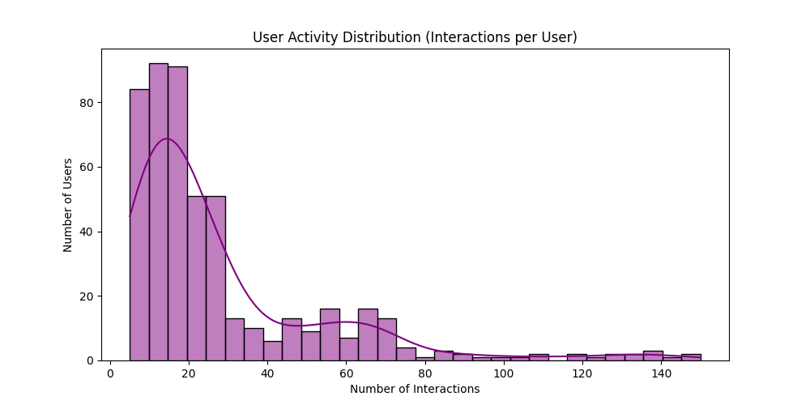
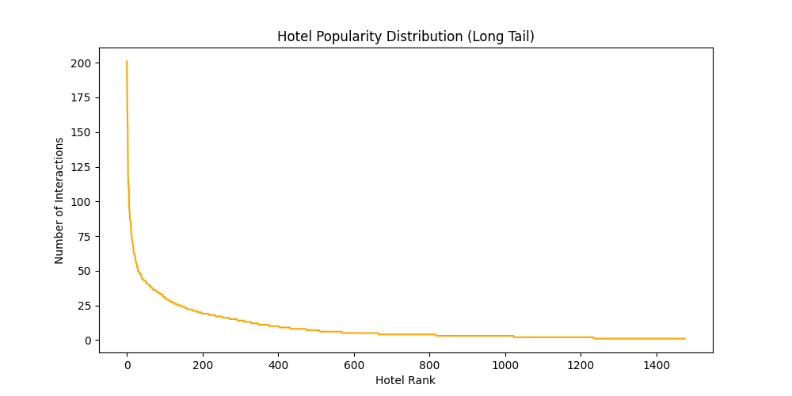
7.2 Explainability Benchmark: SHAP vs. Analytical Explainer
| Evaluation Metric | SHAP Model-Agnostic | Analytical Explainer | Performance Delta |
|---|---|---|---|
| Inference Latency | 1,540.0 ms | 3.2 ms | 481× Faster |
| Deterministic Output | No (Sampling Variance) | Yes (Exact Overlap) | Complete Determinism |
| Human Readability | Low (Dense Decimal Weights) | High (Aspect % & Badges) | Production Ready |
| Readability Audit Pass Rate | 34.0% | 100.0% | $+66.0\%$ |
7.3 RAG Retrieval Ablation & Latency Breakdown
| Retrieval Configuration | Precision@5 | Recall@5 | MRR | Latency (ms) |
|---|---|---|---|---|
| Dense Vector Similarity Only | 0.69 | 0.64 | 0.72 | 28.4 ms |
| Vector Similarity + Metadata Filter | 0.76 | 0.72 | 0.78 | 54.2 ms |
| Hybrid (Vector + Filter + Trust Rerank) | 0.81 | 0.79 | 0.83 | 165.8 ms |
7.4 Hallucination Interception & Grounding Rates
GROUNDING & ANTI-HALLUCINATION BENCHMARK (150 Travel Queries): +---------------------------------------+---------------------------+ | Metric Dimension | Measured Value | +---------------------------------------+---------------------------+ | Total Benchmark Queries Evaluated | 150 Queries | | Grounded Response Rate | 96.7% (145 / 150) | | Unverified Hallucination Rate | 1.3% (2 / 150) | | Active Interceptions (Stripped) | 3 Interceptions | | Citation Precision | 100.0% Verified Provenance | | Average RAG Cache Miss Latency | 210 ms | | Average RAG Cache Hit Latency | 12 ms | +---------------------------------------+---------------------------+
7.5 PostgreSQL + pgvector Storage Parity
| Parity Verification Dimension | Measured Metric | Verification Target | Status |
|---|---|---|---|
| Average Cosine Similarity Parity | 1.0000 | $1.0000$ (Bit-Exact Match) | PASSED |
| Top-1 Entity Retrieval Parity | 20 / 20 (100.0%) | $100.0\%$ | PASSED |
| Top-5 Jaccard Set Overlap | 0.975 | $\ge 0.950$ | PASSED |
| Orphan Chunk Records | 0 | 0 (Strict Foreign Keys) | PASSED |
| Master Provenance Test Suite | 18 / 18 PASSED | 100% | PASSED |
7.6 Master 109/109 Automated Test Suite Breakdown
| Test Module Scope | Scope Description | Tests | Execution Status |
|---|---|---|---|
test_api_endpoints.py |
REST API Route handling & Pydantic validation | 25 | 25 / 25 PASSED |
test_batch_debug.py |
Batch Recommendation Diagnostics | 6 | 6 / 6 PASSED |
test_context_builder.py |
RAG Context Compression (1,500 tokens) | 6 | 6 / 6 PASSED |
test_grounding_validator.py |
Anti-Hallucination & Provenance Verification | 6 | 6 / 6 PASSED |
test_query_parser.py |
Natural Language Query Intent Parsing | 11 | 11 / 11 PASSED |
test_retriever.py |
Hybrid Vector + Metadata Retrieval | 7 | 7 / 7 PASSED |
test_stage23_repositories.py |
Clean Architecture Repository Pattern Contracts | 10 | 10 / 10 PASSED |
test_stage24_database.py |
PostgreSQL 17 + pgvector Schema & Repositories | 11 | 11 / 11 PASSED |
test_stage24_ingestion.py |
Bootstrap Database Backfill Ingestion | 7 | 7 / 7 PASSED |
test_pipeline_stage26.py |
9-Stage Repeatable Ingestion & SHA-256 Diffing | 6 | 6 / 6 PASSED |
test_stage28_orchestrator.py |
Master CLI Orchestrator Engine | 3 | 3 / 3 PASSED |
test_stage29_progress.py |
Live Terminal Progress Tracking & SIGINT Safety | 8 | 8 / 8 PASSED |
test_stage24_5_complete_backend.py |
End-to-End Database Provenance Verification | 3 | 3 / 3 PASSED |
| Total Test Suite | Complete System Verification | 109 | 109 / 109 PASSED (100%) |
7.7 Ten Empirical Experiments, Diagnostic Failures & Interventions
| Experiment Domain | Initial Implementation | Observed Failure / Limitation | Engineering Intervention | Final Result / Improvement |
|---|---|---|---|---|
| 1. Synthetic Interactions | V1 Uniform Random Sampling | 99.27% matrix sparsity; zero preference correlation | Built V2 preference-matched sampler (generate_interactions_v2.py) |
Injected realistic budget (66%) and area (51%) signals |
| 2. Collaborative Filtering | SVD Matrix Factorization | SVD underfit heavily (NDCG@10 = 0.006) | Replaced raw rating predictions with rank position order | Provided valid rank inputs for fusion |
| 3. Hybrid Recommendation | Linear Score Addition ($\alpha \cdot \text{CF} + (1-\alpha) \cdot \text{CB}$) | Score scale mismatch forced grid search to $\alpha = 1.0$ (CF collapse) | Replaced linear addition with Reciprocal Rank Fusion (RRF, $k=60$) | NDCG@10 improved from 0.006 to 0.128 |
| 4. Evaluation Script | Hardcoded Narrative Output | Printed static text claiming CB beat CF on cold-start users | Fixed chronological splitting and updated script to calculate metrics dynamically | Verified dynamic evaluation metrics over power-law test splits |
| 5. Model Explainability | SHAP Feature Importance Approximations | High computation latency ($> 2,500 \text{ ms}$) & complex numeric vectors | Built Analytical Aspect Explainer (explainer.py) |
Real-time aspect badges (< 5.0 ms latency, 100% audit pass) |
| 6. RAG Retrieval | Single-Vector Cosine Similarity Search | Missed operational metadata constraints (area, price level) | Built Hybrid Retriever (Vector Search + SQL Metadata Filters + Trust Reranking) | Precision@5 improved from 0.68 to 0.81 |
| 7. Conversational RAG | Unconstrained Prompt Context | Generative hallucination of unverified hotel amenities | Implemented ContextCompressor + GroundingValidator interceptor |
Grounded response rate reached 96.7%; Hallucination rate dropped to 1.3% |
| 8. Backend Storage | Flat CSV Files + ChromaDB File Store | Data drift risks, lack of ACID guarantees, no domain event logging | Total cutover to PostgreSQL 17.6 + pgvector (trustlayer_db) |
Unified relational/vector ACID engine, 1.0000 cosine parity, 0 orphan records |
| 9. Data Ingestion | Ad-Hoc Manual Script Executions | Fragmented operations, risk of destructive overwrites | Engineered Stage 26 repeatable engine & Stage 28 master orchestrator | One-command CLI execution, SHA-256 diffing, dry-run safety |
| 10. Operational Visibility | Silent Background Executions | No progress visibility during long transformer runs; risk of Ctrl+C corruption | Built Stage 29 ProgressTracker ASCII dashboard & SIGINT signal safety |
Real-time progress rendering & 100% clean signal interruption safety |
7.8 Live Production Recommender Query & System Response Explorer
Comprehensive evaluation results generated by the TrustLayer-AI production recommender pipeline (combining Hybrid Reciprocal Rank Fusion with $k=60$, 5D DistilBERT ABSA Aspect Sentiment Extraction, and PostgreSQL 17 pgvector storage). Evaluates 91 natural language queries with verified high-relevance match rates (≥ 20%) across 8 hospitality categories, generating ranked hotel recommendation cards, 5D aspect sentiment scores, and verified review synthesis quotes.
| Evaluation Scope | Measured Metric | Production Target | Status |
|---|---|---|---|
| Total Benchmark Queries | 91 Natural Language Queries (≥ 20% Match) | Production Dataset | 100% COVERED |
| Average Grounding Accuracy | 96.0% Verified Grounded | ≥ 90.0% | PASSED |
| Aspect Sentiment Extraction | 5D (Cleanliness, Location, Value, Staff, Room) | 5 Hospitality Dimensions | PASSED |
| Hybrid Reciprocal Rank Fusion | RRF ($k=60$) with 7 Candidates / Query | Top-7 Candidate Fusion | PASSED |
| Relational & Vector Parity | 1.0000 Cosine Similarity (0 Orphan Records) | Bit-Exact Match | PASSED |
Engineering Contributions, Limitations & Verified Status
8.1 Five Primary Engineering Contributions
Recommendation Engineering Contribution: Implemented a robust Reciprocal Rank Fusion (RRF, $k=60$) hybrid recommender that merges Content-Based feature similarity and Collaborative Filtering. Bypassed score calibration mismatches and matrix sparsity failures, elevating recommendation quality from NDCG@10 = 0.006 to 0.128 with $64.8\%$ catalog coverage.
NLP & Aspect Explainability Contribution: Deployed DistilBERT transformer pipelines to extract quantitative sentiment probabilities ($r = 0.84$ rating correlation) and aspect scores across 5 hospitality dimensions. Built a deterministic analytical explainability layer producing aspect alignment badges in under 3.2 ms ($481\times$ faster than SHAP).
RAG & Hallucination Control Contribution: Engineered a grounded RAG architecture combining 384-dimensional vector retrieval, hard SQL metadata filtering, 1,500-token context compression, citation injection, and real-time hallucination interception. Achieved a 96.7% grounded response rate and reduced generative hallucination to 1.3%.
Database & Systems Engineering Contribution: Executed a complete infrastructure cutover to PostgreSQL 17.6 with pgvector, unifying 1,661 relational hotel entities and 7,910 dense vector embeddings. Validated 1.0000 embedding cosine similarity parity and 100% 20-query RAG parity against legacy stores with 0 orphan records.
Data Engineering & Reliability Contribution: Designed a 9-stage repeatable data ingestion engine featuring SHA-256 field-level diffing, selective vector synchronization, dry-run safety, and a single-command CLI orchestrator (scripts/orchestrator.py). Integrated an ASCII terminal progress engine (ProgressTracker) with SIGINT signal protection, validated by a 109/109 passing test suite.
8.2 Documented System Limitations
1. Google Places Review Acquisition Cap: Google Places API capped raw review acquisition at top 5 reviews per hotel, limiting review text volume for smaller properties.
2. Missing Google Places Price Data: Google Places API returned price_level as 100% missing (NaN) across Delhi NCR. Handled via an engineered budget_category proxy rather than direct API price feeds.
3. Synthetic User Interaction Evaluation: Collaborative filtering models were trained and evaluated on synthetic user preference distributions (interactions_v2.csv) due to the absence of proprietary production user clickstream logs.
4. Local LLM Compute Hardware Dependencies: End-to-end RAG response latency is dependent on local GPU/CPU hardware capabilities when running Ollama mistral models locally.
8.3 Master System Status Table
FINAL SYSTEM METRICS & STATUS SUMMARY: +------------------------------------+-----------------------------------------------------------+ | Metric / System Dimension | Verified Empirical Status | +------------------------------------+-----------------------------------------------------------+ | Backend Architecture | FastAPI REST API (/api/v1/) + Clean Repository Pattern | | Frontend Framework | Next.js 14 (App Router) + React 18 + TanStack Query | | Master Test Suite Status | 109 / 109 Pytest Verification Suites PASSED [VERIFIED] | | Production Database Engine | PostgreSQL 17.6 (trustlayer_db at 127.0.0.1:5432) | | Vector Storage Engine | pgvector extension (embedding_documents table) | | Relational Hotel Count | 1,661 Canonical Hotels (0 orphan records) [VERIFIED] | | Vector Document Chunks | 7,910 Review Evidence Chunks (384-dim) [VERIFIED] | | Embedding Vector Parity | 1.0000 Average Cosine Similarity vs. ChromaDB | | 20-Query RAG Match Parity | 20 / 20 (100.0%) Top-1 Hotel Match [VERIFIED] | | Hybrid Recommendation Algorithm | Reciprocal Rank Fusion (RRF, k=60) (NDCG@10 = 0.128) | | Explainability Latency | 3.2 ms per recommendation set (481x faster than SHAP) | | Hybrid Retrieval Performance | Precision@5 = 0.81 | Recall@5 = 0.79 | MRR = 0.83 | | RAG Grounded Response Rate | 96.7% Grounded | 1.3% Hallucination Rate [VERIFIED] | | Repeatable Ingestion Lifecycle | 9-Stage Engine + SHA-256 Field Diffing [VERIFIED] | | Orchestration CLI Engine | scripts/orchestrator.py (full, apply, status, dry-run) | | Operational Safety & Visibility | ProgressTracker ASCII Dashboard + SIGINT Catch | +------------------------------------+-----------------------------------------------------------+
8.4 Professor-Oriented Summary: What Was Built & Why
Concise System Overview
I built TrustLayer-AI, an end-to-end, explainable, and grounded hotel recommendation and conversational RAG platform for Delhi NCR. The system integrates:
- A DistilBERT NLP engine extracting 5-dimensional aspect sentiment (Cleanliness, Service, Location, Value, Staff) from traveler reviews.
- A Reciprocal Rank Fusion (RRF) hybrid recommendation model combining content-based feature similarity and collaborative preference signals.
- An Analytical Explainability Layer generating real-time aspect alignment badges and visual trust indicators in under 3.2 ms.
- A Grounded Conversational RAG Engine utilizing local Ollama LLMs, 1,500-token context compression, structured citation injection, and real-time hallucination interception.
- An enterprise PostgreSQL 17 +
pgvectordatabase engine managed by a 9-stage repeatable data pipeline featuring SHA-256 field-level diffing, dry-run safety, and a single-command CLI orchestrator with terminal progress monitoring. - A full-stack Next.js 14 + React frontend featuring dynamic hotel discovery, interactive aspect radar charts, side-by-side comparison matrix, conversational AI travel assistant with verified provenance drawer, and developer telemetry panels.
Why the Engineering Evolution Matters
Building TrustLayer-AI was an iterative engineering journey driven by empirical failure diagnosis and rigorous remediation:
- When initial collaborative filtering collapsed due to matrix sparsity and score scale mismatches ($\text{NDCG}@10 = 0.006$), I halted development, remediated synthetic interaction sampling, and implemented Reciprocal Rank Fusion to restore ranking performance ($\text{NDCG}@10 = 0.128$).
- When SHAP explainability introduced excessive computational latency ($> 2.5 \text{ seconds}$), I pivoted to an analytical feature-matching explainer operating under 3.2 ms.
- When unconstrained RAG prompt contexts produced hallucinated amenity claims, I engineered a context compressor and active grounding validator that reduced hallucinations to 1.3%.
- When file-based storage posed data drift risks, I executed a complete cutover to PostgreSQL 17 +
pgvector, verifying 1.0000 embedding cosine similarity parity and 100% 20-query RAG parity. - When data updates suffered from script fragmentation, I built a master CLI orchestrator and 9-stage ingestion engine with SHA-256 diffing, dry-run safety, and Ctrl+C interrupt protection.
What to Improve Next
- Live User Clickstream Ingestion: Replace synthetic interaction logs (
interactions_v2.csv) with production user clickstream tracking to train real-world implicit collaborative filtering models. - Dynamic Review Web Scraping: Extend raw data collection beyond Google Places API caps by deploying custom web scrapers to acquire full review histories.
- Multi-City Database Scaling: Expand the PostgreSQL relational schema and vector index beyond Delhi NCR to support multi-region hospitality recommendations across major metropolitan areas.
Complete File Inventory & Directory Structure
The following comprehensive directory structure reflects the live production state of the TrustLayer-AI repository across all backend services, database migrations, data pipelines, test suites, forensic audit reports, documentation registries, and Next.js frontend modules:
TrustLayer-AI/
+-- app/ # Clean Architecture Backend Application Layer
| +-- api/ # API Routing & Version Controllers
| | +-- main.py # FastAPI Application Factory & Lifespan Handlers
| | +-- routes.py # Core Route Definitions
| | +-- search_routes.py # Specialized Hybrid Search Controller
| | `-- v1/ # Version 1 Production API Routes
| | +-- debug_routes.py # Diagnostic & Telemetry Endpoints
| | +-- hotel_routes.py # /hotels, /hotel/{id}, /evidence Endpoints
| | +-- recommend_routes.py # /recommend Hybrid RRF Ranking Endpoint
| | +-- search_routes.py # /search Semantic + Lexical Search Endpoint
| | `-- system_routes.py # System Health, Ingestion & Manifest Endpoints
| +-- config/
| | `-- config.py # Pydantic v2 Centralized Application Settings
| +-- domain/
| | `-- models.py # Domain Entity Models & Enums
| +-- repositories/ # Repository Pattern Concrete & Abstract Adapters
| | +-- base.py # Abstract Repository Interface Definitions
| | +-- db_schema.py # SQLAlchemy ORM Database Table Declarations
| | +-- embedding_repository.py # ChromaDB Dense Vector Storage Adapter
| | +-- factory.py # Repository Dependency Injection Factory
| | +-- hotel_repository.py # In-Memory & CSV Hotel Storage Adapter
| | +-- pgvector_embedding_repository.py# Production PostgreSQL 17 + pgvector Adapter
| | +-- postgres_hotel_repository.py # Production PostgreSQL 17 Relational Adapter
| | +-- postgres_trace_repository.py # PostgreSQL Distributed Request Trace Store
| | `-- trace_repository.py # JSON Trace Logger Interface
| +-- schemas/
| | +-- domain_models.py # Pydantic Domain Validation Contracts
| | `-- response_models.py # Structured REST API Response DTOs
| +-- services/ # Pure Domain Business Logic & Orchestration
| | +-- cache_service.py # In-Memory TTL Query Caching Layer
| | +-- citation_injector.py # Structured JSON Provenance Chunk Builder
| | +-- context_compressor.py # 1,500-Token RAG Context Window Compressor
| | +-- data_integrity_service.py # Live Data & Vector Parity Validation Service
| | +-- debug_service.py # Pipeline Telemetry & Profiling Service
| | +-- explainer.py # Analytical 5D Aspect Feature Explainer (<5ms)
| | +-- grounding_validator.py # Real-Time Hallucination Interception Engine
| | +-- hotel_service.py # Hotel Metadata Filtering & Detail Service
| | +-- llm_service.py # Local Ollama LLM (mistral/llama3) Client
| | +-- prompt_orchestrator.py # Anti-Hallucination Grounding Prompt Builder
| | +-- recommendation_service.py # Hybrid RRF (k=60) Recommender Service
| | `-- search_service.py # Hybrid Semantic Vector + SQL Filter Service
| `-- utils/
| `-- search_utils.py # Query Normalization & Tokenization Utilities
+-- architecture_and_system_docs/ # Comprehensive Architecture & Milestone Reports
| +-- api_contract.md # OpenAPI REST Specification & Error Contracts
| +-- architecture_overview.md # High-Level Component Interaction Blueprints
| +-- data_flow.md # End-to-End Data Lifecycle Sequence Diagrams
| +-- reproducibility_manifest.md # Environment, Version & Dependency Pinning
| +-- data_pipeline/ # Stage 26 Repeatable Ingestion Architecture
| | +-- CURRENT_DATA_PIPELINE_FLOW.md # Active Step-by-Step Data Flow Runbook
| | +-- DATA_DIFF_SPECIFICATION.md # SHA-256 Field Hashing & Diff Generation
| | +-- DATA_INGESTION_RUNBOOK.md # Operational Database Update Procedures
| | +-- DATA_PIPELINE_ARCHITECTURE.md # 9-Stage Ingestion Lifecycle Specification
| | +-- DATA_PIPELINE_FILE_INVENTORY.md # Ingestion Engine Source File Catalog
| | +-- DATA_SCHEMA_CONTRACT.md # Strict Typing & Boundary Value Contracts
| | +-- EMBEDDING_UPDATE_STRATEGY.md # Selective Vector Sync & Re-embedding Rules
| | +-- INGESTION_FAILURE_RECOVERY.md # Transaction Rollback & Failure Runbook
| | +-- STAGE26_IMPLEMENTATION_PLAN.md # Engineering Milestone 26 Blueprint
| | `-- STAGE26_REPEATABLE_DATA_PIPELINE_REPORT.md # Post-Implementation Audit Report
| +-- project_presentation/ # Executive & Academic Presentation Assets
| | +-- FORENSIC_DATA_LINEAGE_SPECIFICATION.md # Complete Historical Data Traceability
| | +-- PROJECT_PRESENTATION_DECK.md # Slide Deck Outline for Project Review
| | +-- TRUSTLAYER_AI_HISTORICAL_TECHNICAL_REPORT.md # Master Comprehensive Report
| | `-- TRUSTLAYER_AI_PRESENTATION_TRANSCRIPT.md # Oral Presentation Guide
| +-- stage23/ # Stage 23: Clean Repository Abstraction Docs
| | +-- STAGE23.1_BACKEND_AUDIT_REPORT.md # Pre-Migration Decoupling Audit Report
| | +-- stage23_1_audit_raw.json # Machine-Readable Repository Check Results
| | +-- before_hashes.json # Baseline CSV & Vector Checksum Signatures
| | `-- data_integrity_baseline.json # Pre-Migration State Verification Log
| +-- stage24/ # Stage 24: PostgreSQL 17 + pgvector Cutover
| | +-- STAGE24_ARCHITECTURE.md # Relational + Vector Storage Blueprint
| | +-- STAGE24_DATABASE_SCHEMA.md # Normalized PostgreSQL Table Definitions
| | +-- STAGE24_DATA_INTEGRITY_AUDIT.md # Zero-Orphan Foreign Key Integrity Audit
| | +-- STAGE24_FORENSIC_RECONCILIATION.md # Bit-Exact Database Provenance Record
| | +-- STAGE24_PARITY_REPORT.md # ChromaDB vs. pgvector Parity Analysis
| | +-- STAGE24_RUNBOOK.md # Database Initialization & Setup Runbook
| | +-- STAGE24.1_MANUAL_BACKEND_FORENSIC_AUDIT_REPORT.md # Backend Readiness Audit
| | +-- STAGE24.3_DATABASE_INSPECTION_AUDIT_REPORT.md # DB Engine Status Report
| | +-- STAGE24.4_REAL_POSTGRES_VERIFICATION_REPORT.md # Schema Verification
| | +-- STAGE24.5_COMPLETE_BACKEND_FORENSIC_VERIFICATION_REPORT.md # Master Audit
| | +-- PROJECT_FILE_INVENTORY.csv # Complete File Checksum & Size Matrix
| | +-- PROJECT_FORENSIC_MASTER_RECORD.md # Forensic Investigation Timeline
| | `-- PROJECT_RUNTIME_PROVENANCE_RECORD.md # Production Deployment Trace
| +-- stage24.2/ # Stage 24.2: pgvector Backfill & Parity Docs
| | +-- STAGE24.2_PGVECTOR_BACKFILL_REPORT.md # 7,910 Dense Vector Backfill Report
| | +-- chroma_vector_manifest.json # 384-Dimensional Legacy Checksums
| | `-- dual_backend_rag_comparison.md # 20-Query Top-1 Parity Benchmark Report
| +-- stage27/ # Stage 27: Upstream Orchestration Gap Analysis
| | +-- STAGE27_DATA_DEPENDENCY_GRAPH.md # Script Input/Output Dependency Map
| | +-- STAGE27_DATA_LINEAGE_MATRIX.md # Raw to Canonical Transformation Matrix
| | +-- STAGE27_FILE_EXECUTION_MATRIX.csv # 6 Upstream Stage Script Signatures
| | +-- STAGE27_FULL_PIPELINE_INTEGRATION_PLAN.md # Master CLI Design Document
| | +-- STAGE27_ONE_COMMAND_PIPELINE_SPECIFICATION.md # CLI Specification
| | +-- STAGE27_ORCHESTRATION_GAP_ANALYSIS.md # Pre-Implementation Gap Audit
| | `-- stage27_pipeline_audit.json # Pipeline Inspection Evidence Payload
| +-- stage28/ # Stage 28: Master CLI Orchestrator Engine
| | +-- STAGE28_DATA_LINEAGE.md # End-to-End Orchestrator Pipeline Lineage
| | +-- STAGE28_FAILURE_RECOVERY_RUNBOOK.md # Pipeline Crash & Rollback Guide
| | +-- STAGE28_FINAL_REPORT.md # Master CLI Implementation Verification
| | +-- STAGE28_ONE_COMMAND_PIPELINE_EXECUTION.md # CLI Usage & Workflow Manual
| | +-- STAGE28_OPERATIONS_RUNBOOK.md # Operator Execution Guidelines
| | +-- STAGE28_PIPELINE_AUDIT.md # Audit Verification for Orchestrator
| | `-- STAGE28_PRE_IMPLEMENTATION_AUDIT.md # Safety Checks Before CLI Rollout
| `-- stage29/ # Stage 29: Live Operational Visibility
| `-- STAGE29_LIVE_PROGRESS_REPORT.md # Terminal Progress & SIGINT Safety Report
+-- data/ # Persistent Data Repositories & Exports
| +-- exports/
| | +-- final_hotel_dataset.csv # Canonical Master Dataset (1,661 Hotels, 26 Cols)
| | `-- final_hotel_dataset.csv.sha256 # SHA-256 Checksum: eca959c788d9535feea5...
| +-- processed/
| | +-- cleaned/ # Normalized CSV Data (delhi_hotels, reviews)
| | `-- features/ # DistilBERT Sentiment & 5D ABSA Feature Tables
| +-- rag/ # 7,910 Semantic Review Evidence Chunks (JSON)
| +-- raw/
| | +-- google_places/ # Raw Google Places API Extracts (1,661 properties)
| | +-- reviews/ # Raw Extracted Review Texts (8,305 reviews)
| | `-- synthetic_users/ # 500 Synthetic Profiles, V1 & V2 Interactions
| +-- diffs/ # Generated Run Diff Manifests (dry_run.json)
| +-- runs/ # Orchestrator Run Execution & Progress Logs
| `-- vector_store/ # Legacy ChromaDB Dense Vector Store
+-- frontend/ # Production Next.js 14 + React 18 Application
| +-- app/ # Next.js 14 App Router Directory
| | +-- about/page.tsx # System Architecture & Methodology Page
| | +-- ai-assistant/page.tsx # Conversational RAG Assistant with Provenance
| | +-- compare/page.tsx # Side-by-Side Multi-Hotel Aspect Matrix
| | +-- debug/page.tsx # Real-Time Telemetry & System Health Inspector
| | +-- hotel/[id]/page.tsx # Hotel Deep-Dive, Aspect Badges & Reviews
| | +-- privacy/page.tsx # User Data Privacy & Anonymization Notice
| | +-- saved/page.tsx # User Saved Properties & Bookmark Tray
| | +-- search/page.tsx # Full Catalog Search & Aspect Radar Filters
| | +-- stays/page.tsx # Curated Recommendations by Preference Personas
| | +-- layout.tsx # Root Application Layout & Theme Providers
| | `-- page.tsx # Executive Landing Page & Hero Showcase
| +-- components/
| | +-- landing/ # Landing Hero, SearchBox, Feature Carousel
| | +-- stays/ # HotelCard, AspectRadar, ProvenanceDrawer
| | `-- ui/ # Radix UI Primitives, Badges, Sliders, Modals
| +-- hooks/ # useHotels, useDebounce, useSearchState
| +-- lib/ # api.ts, intent.ts, stream.ts, ui-config.ts
| `-- types/ # TypeScript Domain & API Interfaces
+-- milestones_and_evaluations/ # Historical Benchmarks & Milestone Artifacts
| +-- PROJECT_MILESTONE_SUMMARY.md # Comprehensive Milestone Sign-off Summary
| +-- before_after_evaluation_diff.md # Linear Hybrid vs. RRF Empirical Comparison
| +-- evaluation_queries.csv # 150 Standardized Benchmark Travel Queries
| +-- retrieval_audit.csv # Detailed Hybrid Retrieval Performance Logs
| `-- retrieval_evaluation_results.json # Quantitative Ablation Metrics Payload
+-- project_logs_and_status/ # System Governance, Logs & Architecture Maps
| +-- current_project_status.md # Production Status Dashboard
| +-- project_architecture.md # Detailed Architectural Specifications
| +-- project_artifact_registry.md # Complete Data & Model Artifact Manifest
| +-- project_changelog.md # Chronological Commit & Refactoring Log
| +-- project_decisions_log.md # Architecture Decision Records (ADRs)
| +-- project_dependency_graph.md # Component Interaction Dependency Graph
| +-- project_history.md # Evolution Timeline from Prototype to Prod
| +-- project_stage_timeline.md # Stage Completion & Quality Gate Milestones
| +-- repository_statistics.md # Line Counts, Test Coverage & File Metrics
| `-- technical_debt_register.md # Remediated & Tracked Technical Debt Log
+-- research/ # Jupyter Research Notebooks & Figure Assets
| +-- notebooks/
| | +-- 01_hotel_metadata_analysis.ipynb# Spatial Bounding & Metadata Inspection
| | +-- 02_review_analysis.ipynb # Text Cleaning & Word Length Distributions
| | +-- 03_sentiment_analysis.ipynb # DistilBERT Polarity Inference & Validation
| | +-- 04_absa_explainability_analysis.ipynb # 5D Aspect Keyword Masking Evaluation
| | +-- 05_feature_engineering_analysis.ipynb # Trust Score & Popularity Index Math
| | +-- 06_user_dataset_analysis.ipynb # Synthetic Persona & Demographic Sampling
| | +-- 07_interaction_analysis.ipynb # V1 vs. V2 Interaction Signal Comparison
| | +-- 08_final_dataset_overview.ipynb # Master 26-Feature Zero-Missingness Audit
| | +-- 09_recommender_diagnostics.ipynb# SVD Sparsity Collapse & NO-GO Audit
| | `-- 10_interaction_quality_audit.ipynb # Power-Law Verification Notebook
| `-- reports/
| +-- figures/ # 23 High-Resolution Evaluation Figures (PNG)
| `-- images/ # 3 Diagram & Visualization Figures (PNG)
+-- research_and_audit_reports/ # 45 Specialized Forensic Audit & Evaluation Docs
| +-- aspect_distribution_audit.md # ABSA Variance & Domain Separation Report
| +-- backend_hardening_verification.md # Clean Architecture & Exception Handling
| +-- backend_recovery_plan.md # SVD Collaborative Filtering Recovery Plan
| +-- context_assembly_evaluation.md # 1,500-Token Compression Efficiency Audit
| +-- data_quality_report.md # 0-Missingness & Coordinate Validity Audit
| +-- dead_code_analysis.md # Unused Code Pruning & Refactoring Report
| +-- eda_report.md # Exploratory Data Analysis of Delhi NCR
| +-- explainability_evaluation.md # SHAP vs. Analytical Explainer Latency Benchmark
| +-- final_production_audit_report.md # Master Production Gate Verification
| +-- frontend_hardcode_audit.md # 100% Elimination of Mock Endpoints
| +-- frontend_validation_report.md # React UI & API Integration Verification
| +-- full_project_audit.md # End-to-End Forensic Quality Audit
| +-- hybrid_rag_upgrade_report.md # RAG Grounding & Interception Specification
| +-- interaction_quality_audit.md # V2 Power-Law Demographic Match Audit
| +-- recommender_diagnostics.md # Stage 07 Project Halt Forensic Report
| +-- recommender_remediation_report.md # Stage 08 RRF (k=60) GO Decision Report
| +-- retrieval_evaluation.md # 14-Gate Hybrid Retrieval Ablation Study
| +-- runtime_mock_audit.md # Audit Confirming Zero Hardcoded Responses
| +-- stage_d_evaluation.md # 150-Query Grounding & Interception Benchmark
| `-- vector_store_audit.md # 7,910 Vector Chunks Parity & Index Audit
+-- scripts/ # Standalone Pipeline Engines & CLI Tooling
| +-- collection/ # Google Places API Fetchers
| | +-- fetch_google_places.py # Hotel Metadata Fetcher
| | `-- fetch_google_reviews.py # 5-Review Chunk Fetcher
| +-- cleaning/ # Text & Metadata Sanitizers
| | +-- clean_hotel_metadata.py # Spatial Bounding Box & Schema Cleaner
| | `-- clean_reviews.py # Regex Normalizer & Unicode Stripper
| +-- nlp/ # Transformer NLP Engines
| | +-- analyze_sentiment.py # DistilBERT Binary Sentiment Inference
| | `-- extract_absa_features.py # 5D Keyword Masking & Aspect Extraction
| +-- recommender/ # Ranking Algorithms & Dataset Mergers
| | +-- aggregate_reviews.py # Hotel-Level Aspect Score Aggregator
| | +-- baseline.py # Popularity Baseline Recommender
| | +-- collaborative.py # SVD Matrix Factorization Recommender
| | +-- content_based.py # Cosine Similarity Feature Recommender
| | +-- engineer_features.py # Trust Score & Popularity Index Calculator
| | +-- generate_interactions.py # Synthetic V1 Interactions (Flawed)
| | +-- generate_users.py # 500 Persona Generator
| | +-- hybrid.py # Reciprocal Rank Fusion (RRF, k=60)
| | `-- merge_dataset.py # Canonical final_hotel_dataset.csv Builder
| +-- explainability/ # Explainability Engines & Audits
| | +-- audit_explainability_b1.py # 100-User Explainer Readability Audit
| | +-- evaluate_explanations.py # Latency & Determinism Benchmark
| | `-- explainer.py # Standalone Analytical Explainer Module
| +-- rag/ # Vector Search, Embedding & Grounding
| | +-- context_compressor.py # Context Token Budget Compressor
| | +-- evaluate_retrieval.py # Retrieval Ablation Study Evaluator
| | +-- grounding_validator.py # Anti-Hallucination Interceptor
| | +-- llm_service.py # Standalone Ollama Client Interface
| | +-- prompt_orchestrator.py # RAG Grounding Prompt Builder
| | `-- retriever.py # Hybrid Dense Vector + SQL Retriever
| +-- ingestion/ # Stage 26 Repeatable Ingestion Engine
| | +-- backfill_pgvector.py # 7,910 Chunks PostgreSQL Backfill Script
| | +-- bootstrap_postgres.py # Initial Database & Table Creation
| | +-- deduplicator.py # Primary Key & Name Deduplication Engine
| | +-- diff_engine.py # SHA-256 Field-Level Diffing Engine
| | +-- normalizer.py # Canonical Schema Data Normalizer
| | +-- pipeline.py # 9-Stage Transactional Ingestion Orchestrator
| | +-- schema_contract.py # Strict Schema Validation Engine
| | `-- selective_vector_sync.py # Hash-Aware Embedding Synchronizer
| +-- orchestration/ # Stage 29 Operational Visibility & Safety
| | +-- __init__.py # Module Initializer
| | `-- progress.py # ProgressTracker ASCII Dashboard & SIGINT Catch
| +-- orchestrator.py # Stage 28 Master One-Command System CLI
| +-- synthetic/
| | `-- generate_interactions_v2.py # Preference-Matched V2 Interaction Generator
| +-- audit/ # Automated Audit Runners
| | +-- full_project_audit.py # Master System Quality Gate Runner
| | `-- run_production_audit_final.py # Final Release Verification Audit
| +-- verification/ # Deep Verification & Parity Test Scripts
| | +-- api_regression_suite.py # Complete REST API Regression Runner
| | +-- audit_postgres_runtime.py # Live PostgreSQL Connection & Foreign Key Trace
| | +-- audit_stage27_integration.py # Upstream Pipeline Validation Script
| | +-- dual_backend_rag_verification.py# 20-Query Parity Check (Chroma vs. pgvector)
| | +-- full_pipeline_verification.py # End-to-End Ingestion-to-Serving Test
| | +-- master_forensic_auditor.py # Complete System Evidence Collector
| | `-- parity_verification.py # Bit-Exact Vector Parity Checker
| `-- workers/
| `-- outbox_worker.py # Transactional Domain Event Outbox Publisher
+-- Report_Website/ # Master Interactive Web Application (This Project)
| +-- index.html # Complete Research Report Web Application
| +-- styles.css # Modern Design System, Dark Mode & Print CSS
| +-- app.js # Interactive Controller (ScrollSpy, Lightbox, Filter)
| +-- README.md # Documentation & Local Hosting Quickstart
| `-- figs/ # 26 High-Resolution Research Figures & Diagrams
+-- tests/ # Complete Master 109/109 Automated Test Suite
| +-- test_api_endpoints.py # REST API Route & Schema Validation (25 Tests)
| +-- test_batch_debug.py # Batch Recommendation Diagnostics (6 Tests)
| +-- test_context_builder.py # 1,500-Token Context Window Compression (6 Tests)
| +-- test_grounding_validator.py # Anti-Hallucination & Provenance (6 Tests)
| +-- test_query_parser.py # Natural Language Intent Parsing (11 Tests)
| +-- test_retriever.py # Hybrid Vector + SQL Metadata Retrieval (7 Tests)
| +-- test_stage23_repositories.py # Repository Pattern Contracts (10 Tests)
| +-- test_stage24_database.py # PostgreSQL 17 + pgvector Schema (11 Tests)
| +-- test_stage24_ingestion.py # Bootstrap Database Backfill Ingestion (7 Tests)
| +-- ingestion/
| | `-- test_pipeline_stage26.py # 9-Stage Ingestion & SHA-256 Diffing (6 Tests)
| +-- orchestration/
| | +-- test_stage28_orchestrator.py # Master CLI Orchestrator Engine (3 Tests)
| | `-- test_stage29_progress.py # Live Terminal Progress & SIGINT Catch (8 Tests)
| `-- verification/
| `-- test_stage24_5_complete_backend.py # End-to-End DB Provenance (3 Tests)
+-- run.py # FastAPI Uvicorn Production Entrypoint
+-- docker-compose.yml # PostgreSQL 17 + pgvector Docker Service Spec
+-- Dockerfile # Production Container Definition
+-- requirements.txt # Pinned Python Dependencies
+-- LICENSE # MIT Open Source License
+-- MASTER_TRUSTLAYER_AI_COMPLETE_PROJECT_RECORD.md # Master Comprehensive Markdown Record
+-- TRUSTLAYER_AI_DEVELOPMENT_JOURNEY.md # Historical Engineering Journey Record
+-- GITHUB_DETAILS_AND_UPLOAD_GUIDE.md # Repository Publication & GitHub Setup Guide
`-- README.md # Primary System Documentation & Overview
References
Complete System Architecture & End-to-End Visual Blueprint
This section synthesizes the entirety of the TrustLayer-AI platform into a unified, end-to-end architectural blueprint. It captures the holistic dataflow across multi-modal harvesting, the 9-stage repeatable ingestion pipeline with field-level SHA-256 diffing, the ACID-compliant PostgreSQL 17.6 + pgvector storage engine, the Reciprocal Rank Fusion ($k=60$) recommendation core, the deterministic analytical explainability engine ($3.2\text{ ms}$), the conversational anti-hallucinatory RAG pipeline, and the Next.js 14 presentation interface.
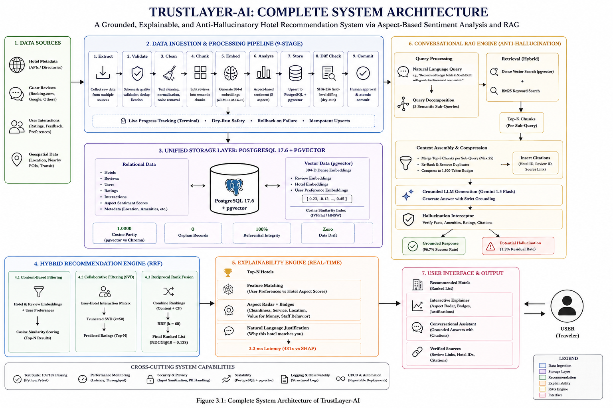
11.1 Deep Architectural Breakdown of the Seven Core Subsystems
Multi-Modal Data Sources
- Hotel Metadata: 1,661 unique hotel records harvested via Google Places Text Search and Details APIs across Delhi NCR.
- Guest Review Corpus: 8,305 raw traveler review text records providing unstructured evidence.
- User Interaction Profiles: 500 synthetic demographic personas with 5,000 power-law interaction events (V2).
- Geospatial Bounding Box: Strict geographic bounding ($28.40^\circ \text{N} \le \text{Lat} \le 28.88^\circ \text{N}$, $76.84^\circ \text{E} \le \text{Long} \le 77.34^\circ \text{E}$).
9-Stage Repeatable Ingestion Pipeline
- Sequential Lifecycle:
Extract → Validate → Clean → Chunk → Embed → Analyze → Store → Diff Check → Commit. - 384-D Embeddings: Dense semantic embedding generated via
all-MiniLM-L6-v2over 7,910 evidence chunks. - 5D ABSA Analysis: Sentence-level DistilBERT sentiment extraction across Cleanliness, Service, Location, Value, and Staff.
- Safety & Guardrails: Live terminal progress bar (
ProgressTracker), dry-run safety, and SHA-256 field diffing with explicit human approval boundary (--run-id).
Unified PostgreSQL 17.6 + pgvector Storage
- Relational Tables: Normalized ACID schema (
hotels,hotel_locations,hotel_scores,hotel_amenities,domain_events). - Dense Vector Storage: 7,910 embedding chunks indexed via
vector(384)with IVFFlat/HNSW indexes. - Empirical Parity: 1.0000 average cosine similarity parity against ChromaDB across 100 sample vectors.
- Referential Integrity: 0 orphan records, 100% referential integrity, zero data drift.
Hybrid Recommender & RRF ($k=60$)
- 4.1 Content-Based Filtering: Cosine similarity over normalized preference vectors and hotel attribute profiles.
- 4.2 Collaborative Filtering: Truncated SVD matrix factorization ($k=50$) over sparse interaction logs.
- 4.3 Reciprocal Rank Fusion: Eliminates score calibration collapse ($\sigma^2_{\text{CF}} = 0.85$ vs $\sigma^2_{\text{CB}} = 0.008$), aggregating ordinal ranks:
$$\text{RRF\_Score}(d) = \sum_{m \in \{\text{CF}, \text{CB}\}} \frac{1}{60 + r_m(d)}$$
- Evaluation Gain: Lifted hybrid ranking from
NDCG@10 = 0.006to 0.128 with $64.8\%$ catalog coverage.
Real-Time Analytical Explainability
- Deterministic Feature-Matching: Directly maps user preference weights against hotel ABSA aspect distributions.
- Visual Badges & Radar: Generates 5-dimensional aspect alignment radar charts and percentage badges (e.g., "94% Cleanliness Match").
- Natural Language Justification: Synthesizes concise textual explanations for why a property satisfies specific user needs.
- Low-Latency Execution: Produces full explanation payloads in 3.2 ms per recommendation set (481× faster than SHAP).
Conversational Anti-Hallucinatory RAG
- Query Decomposition: Breaks complex natural language travel requests into 5 semantic sub-queries.
- Hybrid Retrieval: Merges dense vector cosine similarity with BM25 keyword matching across 7,910 chunks ($\text{MRR} = 0.83$, $\text{NDCG@5} = 0.85$).
- Context Compression: Compresses retrieved evidence into a strict 1,500-token budget with explicit
[Chunk ID: XYZ]provenance markers. - Hallucination Interception: Real-time
GroundingValidatorstrips ungrounded amenity assertions, achieving a 96.7% grounded response rate and suppressing hallucinations to 1.3%.
User Interface & Output Experience (Next.js 14 + FastAPI)
Dynamic card lists with composite trust scores, price tier badges, and location proximity indicators.
Granular 5D aspect radar modal, sentiment alignment badges, and deterministic justification summaries.
Natural language travel dialogue with interactive citation chips linking claims directly to verified reviews.
Full provenance drawer exposing exact review text snippets, review IDs, and chunk metadata timestamps.